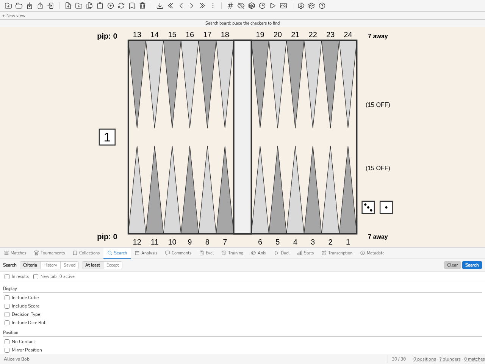
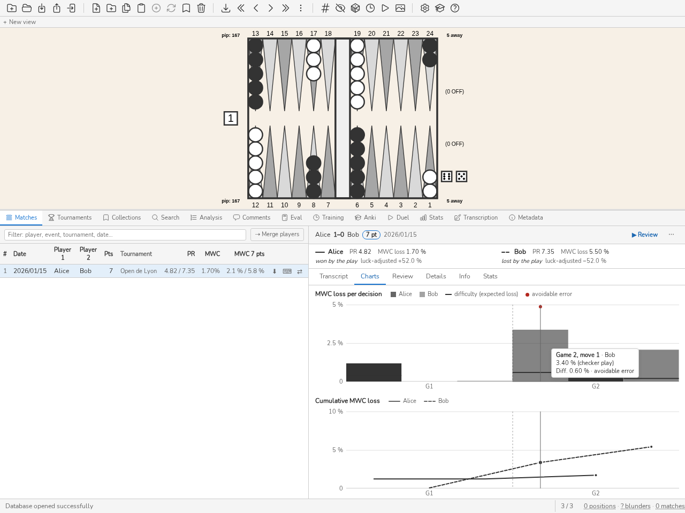
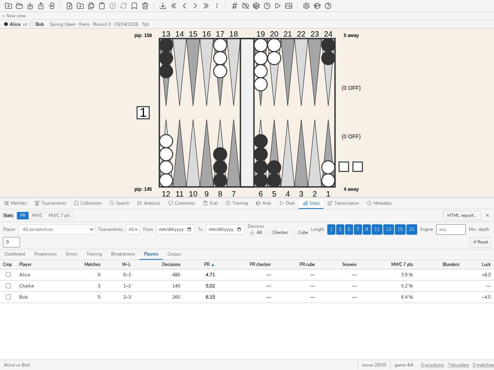

Manual
Introduction
blunderDB is software for creating backgammon position databases. Its main strength is to provide a single place to aggregate positions that a player has encountered (online, in tournaments) and to be able to re-study these positions by filtering them according to various arbitrarily combinable filters. blunderDB can also be used to create catalogs of reference positions.
Positions are stored in a database represented by a .db file. The desktop application opens this file directly, never a network address: server mode is another mode of the same binary, and moving from one to the other means exporting or migrating the database, not pointing the application at a URL.
Main Interactions
The main interactions possible with blunderDB are:
add a new position,
modify an existing position,
copy the board image to the clipboard (PNG) via CTRL-X, or with the full analysis via CTRL-X CTRL-X,
delete an existing position,
search for one or more positions,
import matches from various sources (XG, GNUbg, BGBlitz, Jellyfish, HedgeHog), including comments from XG files,
navigate through the moves of an imported match,
organize positions into collections,
organize matches into tournaments.
The user can freely tag positions and annotate them with comments.
Description of the interface
The interface of blunderDB is composed, from top to bottom, of:
[top] the toolbar, which gathers all the main operations that can be performed on the database,
[in the middle] the main display area, which allows for displaying or editing backgammon positions,
[at the bottom] the status bar, which provides various information about the database or the current position, and integrates the command line.
Panels can be displayed to:
display the analysis data associated with the current position from eXtreme Gammon (XG), GNUbg, or BGBlitz,
display, add, or modify comments,
search and filter positions using combinable criteria,
display and manage position collections (collections panel),
display the list of imported matches and navigate through the moves of a match (match panel),
display and manage tournaments (tournaments panel),
display performance statistics (Stats panel),
compute the EPC (Effective Pip Count) of a bearoff position (Eval panel),
train on calculation exercises (Training panel),
study positions with spaced repetition (Anki panel),
transcribe a match by hand (Transcription panel),
display the database metadata (metadata panel).
The panel height is set by dragging its handle; it stays the same from one tab to another.
Modal windows can be displayed to:
display the blunderDB help, whose search field (/ puts the cursor there) selects the occurrences of the typed text, regardless of case and accents (ENTER goes to the next, SHIFT-ENTER to the previous),
display the catalogue of guided tours (see Guided tours and sample database),
configure database export settings,
configure blunderDB, in particular the interface language (see Configuration).
The main display area provides the user with:
a board to display or edit a backgammon position,
the level and owner of the cube,
the pip count of each player,
the score of each player,
the dice to play. If no values are shown on the dice, the position of the dice indicates which player is on roll and that the position is a cube decision. When the cube decision is a response to a double (take/pass), the offered cube is shown in the centre of the board, at the offered value.
The clipboard is the everyday gesture; saving is the other need — the illustration for an article, a forum post, a lesson. SVG is offered because the board is one: it is the form that survives being enlarged, the one you put in a document without blurring it. PNG derives from it, as does the clipboard copy: one rendering, three destinations, so none of them can drift from the others. This menu does not appear in the Eval panel or in the Search panel, where the right button already places the other colour’s checkers. See Bringing a position into the Eval panel for bringing a position into the Eval panel.
The status bar is structured from left to right with the following information:
the command line, accessible by pressing the SPACE key,
an informational message related to an operation performed by the user,
the index of the current position, followed by the number of positions in the current library (or move/game info when navigating a match),
the library counter — “412 positions · 38 blunders · 5 matches” — where every number opens what it counts: the positions, the
E>search at the library’s threshold (run at once, as if typed, and recorded in the search history), or the match list. When the list on screen is not the whole library (search, collection, match), the blunder figure reads “12 / 340 blunders”: the blunders of that list, then those of the library, at the same threshold; a list of more than 20,000 positions is not counted and keeps only the total. A figure you cannot follow is a decoration. The blunder threshold is the library’s own, set in the Library tab of the settings and shared with the statistics: two thresholds would make the same word mean two things. The counter promises exactly what the link opens, including for a position played several ways, which is worth its largest cost. On a very large library (over 200,000 rows) the counter does not scan the tables: a number prefixed with “≈” is an estimate (an upper bound, since deleted rows leave gaps). If the positions are estimated, the blunder count, which has no honest estimate, shows “?” — the link runs the search, which gives the exact count. The two blunder numbers are separate links: the first runs thess E>sub-search within the list on screen, the second the search across the whole library; when only the total is shown, there is a single link.
Note
In the case of positions resulting from a user search, the number of positions indicated in the status bar corresponds to the number of filtered positions.
The Anki tab carries a badge when cards are due, across every deck. That figure is the reason to open the tab; it has no business behind it. Zero shows nothing: a badge saying “0” is noise.
The log command opens the activity log: the last two hundred lines of the log file, a button to copy them — what it takes to attach a report to a bug — and another to open the folder holding them. The log is neither filtered nor reformatted: a log you tidy up is a log you can no longer quote.
The grid command opens the contact sheet: the browsed list — search results, library, collection — as a grid of mini-boards, drawn like the board, in pages of twenty-four. It opens on the page of the current position, whose thumbnail is outlined; a click or ENTER on a thumbnail opens its position on the board and closes the sheet, and it can be browsed entirely from the keyboard (see Contact sheet). It does not open in edit mode or in a match, which is browsed by its moves.
In the search history of the Search panel, each token of a saved command shows as a named chip — No Contact, Move Error — rather than a bare token. The exact command stays in the tooltip, since that is what gets re-run; and a token blunderDB does not recognise shows as it is rather than translated to the nearest thing.
View Tabs
Below the toolbar, a tab bar lets you work with several views in parallel. Each view is an independent workspace that keeps its own position list, the index of the current position, the displayed position, the analysis and the selected move, the active panel, the comment being edited, as well as the navigation context within a match. This makes it possible, for example, to keep a search open in one view while browsing a match in another.
Create a view: click the + button of the tab bar (named + New view as long as there is only one view) or press CTRL-T. The new view starts as a copy of the current view.
Close a view: click the cross on the tab or press CTRL-W. The last view cannot be closed.
Switch view: click a tab, press CTRL-PageUp / CTRL-PageDown (or SHIFT-J / SHIFT-K) to move to the previous / next view, or CTRL-1 to CTRL-9 to jump directly to the n-th view.
Rename a view: double-click the tab, type the new name and confirm with ENTER.
A view left in the Eval panel comes back to it as it was left: its scratch board and, on leaving the panel, the position it was studying. The last scratch board of the Eval panel also belongs to each view.
Views are saved with the database session state and restored when it is reopened.
Configuration
The settings button (gear icon) in the toolbar, to the left of the help button, opens blunderDB’s settings window. It is organised in nine tabs:
Interface — theme, language, display scale, panel position, PageUp / PageDown step (10, 50, 100, 500 or 1,000 positions, or 10% of the list), logs, update check, your name and neighbouring positions;
Colours — the board’s colours;
Library — what belongs to the open database: the error and blunder thresholds, compaction and repair, described below;
Corpus — duplicates on import, player and event aliases and the search for probable duplicates (see match import);
Bearoff — the bearoff tables used by the Eval panel;
gammonNet — the settings of the embedded evaluator, described below;
Watched folder — the automatic import of matches arriving in a folder, described below;
Assistant and MCP — the local MCP server and the built-in assistant, described below;
Issuer identity — the key that signs your watermarks, described in Handing out a database: origin and password.
The Interface tab starts with a theme: follow the system, light, dark, high contrast or printable. The theme sets the interface colours and proposes a board palette — a dark interface around a light board is not a dark theme, it is half of one, since the board occupies most of the window.
You keep the last word, and the mechanism guarantees it rather than promising it: the Colours tab still sets the board directly, and a colour chosen after the theme is yours. At start-up only the interface tokens are applied, never the board palette — the one you set is already loaded, and rewriting it at every launch would erase your work one session at a time. See ADR-0038.
Follow the system is the default: it obeys the desktop’s light/dark preference, including when it changes mid-session. A tool does not impose its light or its dark on a desktop that has already decided.
The Interface tab also lets you choose the language among English, French, German, Italian, Spanish, Finnish, Japanese, Greek and Russian. The whole interface (toolbar, panels, messages, help) is translated into the selected language. The language choice is saved and kept from one session to the next.
The Library tab gathers what belongs to the open file rather than to the machine. It is empty as long as no database is open, and it says so.
It carries first the two thresholds that decide the whole application’s vocabulary: a decision is an error as soon as its cost reaches the error threshold, and that error is a blunder as soon as it reaches the blunder threshold. Every blunder is an error, so the first threshold cannot exceed the second, and blunderDB refuses the inverted pair. The values are entered in equity — “0.080” — the unit of every table; the command line, for its part, speaks millipoints, so the 0.080 threshold is written E>80 in a search.
These thresholds follow the file, not the computer: the same database counts the same blunders wherever it is opened, blunderdb info displays them, and blunderdb edit --error-threshold / --blunder-threshold sets them. They do not travel in an export: a threshold is a reading habit, not a fact of the positions.
Three presets are offered in one click, each under the name of the program that drew that line: blunderDB (0.050 / 0.100), XG (0.020 / 0.080) and gnubg (0.040 / 0.080). By default, a library reads 0.050 and 0.100.
What they change, on screen: the blunder count of the status bar’s counter and the search its link prepares, the “Errors” and “Blunders” columns of the statistics and of the players table, the marks on the moves in a match’s detail pane (Matches Panel), and the list of positions blunderDB offers to review after an import.
The same tab also offers a Compact database button, which reclaims the disk space left behind by deletions (matches, tournaments, purges): the database never shrinks by itself when data is deleted, that compaction has to be requested explicitly. The operation can take a while on a large database. The compacted copy is written next to the file, then replaces it: temporarily, about the size of the database is needed in free disk space on its volume, not in memory. If another program has the database open (a second, read-only instance, for example), the file is not replaced: the database is compacted in place, which needs about twice its size in free space, and a temporary file goes to the system’s temporary folder, or to the one the SQLITE_TMPDIR environment variable names: on a small /tmp, point it at the database’s volume. blunderDB refuses to start, with a message saying what is missing (disk space, or less than 512 MB of available memory), rather than risk an interrupted compaction. A confirmation is asked before it runs. The result — the space gained, in megabytes — is then shown in the status bar. The same operation is available on the command line through blunderdb vacuum (see Command Line Interface (CLI)).
After an in-place compaction, blunderDB checks that the file did shrink. On Windows, the system refuses to shorten a file that another program keeps open in certain ways: the compaction then ends with a message saying so — close the other program and run it again — instead of announcing a gain that did not happen.
The Open the log folder button, in the Interface tab, opens the folder holding the application log — useful for attaching details to a bug report, especially when blunderDB was started from a shortcut or a double-click, with no terminal attached to show anything.
The Check for updates at startup checkbox, in the same tab, off by default, queries the GitHub repository’s releases page once per launch and shows a message in the status bar when a newer version is available — never a window that gets in the way. This check stays automatically disabled on an installation that came through a package manager (Flatpak, Homebrew, a distribution package…): that channel is the one handling updates then, not blunderDB itself.
Two settings of the Interface tab govern the ranking of neighbouring positions (the like token, see Search Panel): the number of neighbours returned, and the maximum distance beyond which a position stops being one. That distance is zero by default, that is, no ceiling: the scale depends on the game phase, and a value chosen here would read as a measurement. The like<12 token imposes its own for one search, without touching the setting.
The Board colours tab lets you customise the board’s colours. Each element has its own colour picker: the background, the border, the light and dark points, player 1’s and player 2’s checkers, the dice, the dice pips and the cube. The Reset button restores all the default colours. Like the language, the chosen colours are kept across sessions.
The Bearoff tab manages the Eval panel’s bearoff tables (see Eval Panel). They are neither embedded in the executable nor downloaded: blunderDB computes them on the machine that uses them, and the result is identical byte for byte to what gnubg produces — the SHA-256 fingerprint is checked before a table is accepted.
The two ordinary tables (TS-06-06 for the cube verdict, OS-06 for the EPC) are computed on first launch, in the background and without asking: about six seconds on one core, during which the application is used normally. The Eval panel mentions it only if a position is placed there that needs a table which is not ready yet.
The tab shows the active domain and its origin, the state of the one-sided table the EPC reads, the folder where all this lives, and the list of the tables present with their size and their verdict. Each row can be deleted individually, after confirmation.
Verified or unverified. A verified table has exactly the bytes gnubg produces for its domain: its SHA-256 fingerprint is recorded in blunderDB and was found again. The fingerprints recorded for one-sided tables (OS-06 to OS-10) are the ones produced by GNUbg 1.08’s makebearoff tool. An unverified table is well formed but its domain has no recorded fingerprint — nothing is held against it, simply nobody has compared it to the reference. A corrupt table contradicts itself and is never read; it is recomputed.
Computing a wider table. The domain is picked from a list of two families, together with the number of cores to give it (by default all but one, so the machine stays usable):
exact cube (two-sided), from TS-06-06 to TS-06-15: widens the domain where the winning probability and the cube verdict are read rather than estimated;
EPC beyond the home board (one-sided), from OS-06 to OS-10: widens how far from home a chequer may stand without the EPC block going silent. This sweep reads only positions smaller than the one it is computing, so it is sequential by construction and the core count buys it nothing — the picker says so by greying out.
Before anything starts, the tab states three figures for the chosen domain: the size on disk, the memory needed during the computation, and the time it should take on this machine. The last one starts as an estimate and becomes a measurement: every run wide enough records its own speed and keeps it. A domain the available memory cannot hold is offered greyed out, with the reason — “it would need 24 GB, 12 are left” is an answer, an absent row would not be.
As an order of magnitude, on a sixteen-thread machine: TS-06-09 weighs 191 MB and takes about ten seconds, TS-06-11 weighs 1.2 GB and a few minutes, TS-06-13 exceeds what most machines can hold in memory. On the one-sided side, on one core: OS-07 weighs 4.9 MB and takes 17 s, OS-08 15 MB and 1 min 20, OS-10 117 MB and half an hour.
Pause and resume. During the computation, the progress shows the measured remaining time and two distinct buttons: Pause and Cancel. Pausing writes the state of the computation beside the table; running it again continues where it stopped instead of starting over. Cancelling keeps nothing. Closing the configuration window interrupts nothing — the computation carries on in the background.
A paused computation is found again at the next launch, named and quantified (“TS-06-09 interrupted at 43%”), with Resume and Delete. Nothing restarts on its own: the user is the one who asked it to stop.
The tab finally allows pointing to an external two-sided .bd file, for example a database produced by gnubg itself: the table with the widest domain wins.
The Library tab finally carries Repair the analyses: the analysis columns that search and statistics query are a projection of the stored analyses, which stay intact. A fault in the projection is therefore repairable without re-importing anything. It is explicit and never automatic — rewriting someone’s analysis columns on the mere act of opening their database is not something a tool should do behind their back. The same blunderdb repair is available on the command line.
The gammonNet tab configures the embedded evaluator (see ADR-0011). Two search depths can be set there, named and kept separately — lowering one never changes the other:
Display depth — the interactive comfort while editing the board; never written to the database.
Analysis depth — what the post-import analysis batch writes into a position’s Analysis.
Both default to 2-ply, the canonical configuration. The tab also offers pruning (k=12 by default) and the number of candidate moves shown (10 by default), as well as an auto-analyze after import box which, once ticked, checks after every import whether positions with no analysis at all remain (neither gammonNet, nor XG, nor GNUbg, nor BGBlitz — the rule is “an evaluation only fills a hole”, never a replacement) and, if so, starts a gammonNet analysis in the background at the configured analysis depth. An Analyze now button re-runs the same catch-up manually, useful for a library built before this feature existed.
gammonNet evaluates a take or a pass on the doubler’s decision, before the double. A gammonNet verdict written on such an answer by an earlier version of blunderDB judged the receiver’s redouble: it is deleted when the library is opened, or when a database carrying it is imported. The take or pass becomes a position with no analysis again, left out of the statistics until Analyze now (or the automatic analysis after import) re-evaluates it.
A second button, Re-analyze stale positions, covers the opposite case: a position already analyzed by gammonNet, but whose stored analysis was written by an engine version older than the one currently running, or at a depth different from the analysis depth configured above, is flagged there as stale and re-evaluated. A position that also carries an XG, GNUbg or BGBlitz analysis is never touched by this button, whatever its gammonNet content — ADR-0013’s protection remains unconditional. The count shown next to each button (positions with no analysis, stale positions) is purely informational; the batch recomputes its own list when it starts.
Both batches are bounded, visible and cancellable, never a silent daemon: their progress (positions analysed / total) and a cancel button appear in the status bar for their whole duration, and disappear once finished in favor of a message summarizing the result — how many positions were analyzed, how many were refused (a position gammonNet declines to evaluate, such as a match score beyond its MET’s range, which is never a failure) and how many failed (retried, unchanged, on the next run). Closing the application during either loses nothing: each analyzed position is written as it goes, and the next run resumes exactly where the analysis stopped, with no journal to keep.
The same tab holds the setting for the rollouts started from the Analysis panel (see Rollouts), kept from one session to the next: Fast (216 games, truncated at 7 plies), Standard (1296 games, truncated at 11 plies) or Free, where every parameter can be edited — truncation, minimum and maximum games (multiples of 36), JSD limit, depth (ply), number of candidates, seed and number of processes.
Library match equity table. At the bottom of the tab, the Library match equity table (MET) list chooses the table gammonNet uses to value match scores: Kazaross-XG2, built in and the default, or a table imported from a GNUbg .xml file with the Import a .xml MET… button. The choice belongs to the database, not to the application: opening another database means getting its table back. Only explicit tables are read (not the parametric zadeh or mec tables); beyond the length of an imported table, the built-in table takes over. A table is identified by its values, not by its name: importing GNUbg’s Kazaross-XG2.xml adds nothing, it is the built-in table. Each analysis computed by gammonNet records the table it was computed with; imported analyses (XG, GNUbg, BGBlitz) are assumed to have been computed with Kazaross-XG2. A match-score analysis computed with a table other than the current one is marked Different MET in the analysis panel and left out of the statistics (average errors, PR, rankings, head-to-head); a money-game analysis never is. Changing the table rewrites no analysis: only what the comparisons keep changes.
The panel’s live evaluation and the cube matrix are valued with the database’s table, like the analyses it stores. A table travels with the analyses that cite it: exporting a database takes it along, and importing a database adds it to the receiving database, without duplicates (a table already held is recognised by its values) and without making it current. A gammonNet analysis replaced by another engine’s (XG, GNUbg) is again taken as computed with Kazaross-XG2.
A match imported without an analysis now gets a Performance Rating. That is the case of a match played online, or of a Jellyfish .mat file, that nobody ran through XG: blunderDB knew its positions and the moves played, but no analysis said what they were worth. Once the batch has run, the move actually played is compared with gammonNet’s ranking and the gap feeds the PR, the error rate, the worst decisions and every other indicator, exactly as for a match analysed by XG. The comparison invents nothing: the played move comes from the match’s own move table, written at import whether or not the file carried an analysis.
A database analysed with a version older than this one does not need to be re-evaluated: blunderdb repair recomputes the columns from the analyses and the moves already stored and gives those matches their PR back (see repair).
One honest caveat: a position is identified by its structure, so a position met twice — played well once and badly the other time — carries only one gap, that of its first recorded occurrence. This is not specific to this computation: an XG library has exactly the same shape.
Watched folder
The Watched folder tab asks blunderDB to look at a folder while it runs and import each match file that appears in it. Play a session in eXtreme Gammon, come back to blunderDB, and find the matches already there.
Nothing is guessed. Until a folder is named there is no watch: blunderDB does not start reading a directory because it supposed where your matches live. The Suggest button looks at the usual places on this machine and offers one only if it really exists; otherwise it says so, and naming the folder is up to you.
Three things are worth knowing before ticking the box:
Only files that appear are imported. Whatever the folder already holds when the watch starts is recorded as known and left alone: pointing a watch at four years of matches must not import all of them. To import what is there, use the folder import, which exists for that — and the two compose very well, the import first, the watch after.
A file is imported only once its size has settled. A match another program is writing grows from one glance to the next; importing it half-written would give a parse error nobody can act on. blunderDB therefore waits to see the same file unchanged twice.
The import is silent. You were studying a position when your matches arrived: taking the screen back from you would be the worst possible moment. The mode, the active search, the tab and the displayed position do not move; the position list is not reloaded and shows the new matches at the next reload. The import runs without a window, and the status bar shows a banner giving the count of matches imported, skipped (duplicates) and failed, with a button that opens the full report if you wish. Everything else is identical to a manual import: the same duplicates detected, the same import batch, the same automatic analysis if it is enabled.
The default interval is ten seconds; the floor is two. The folder is not walked recursively: a watched folder is where a tool drops its matches, not a tree to crawl. An unmounted network share does not stop the watch, nor does it make its contents pass for new when it comes back.
The same watch exists on the command line, with blunderdb import --type batch --dir <folder> --watch (see Command Line Interface (CLI)): it is the form a server, a scheduled task or a script can use.
Assistant and MCP
The Assistant and MCP tab controls two things, both disabled by default.
The local MCP server offers blunderDB’s tools (search, reading a position and its analysis, a player’s statistics, quizzes…) to an assistant that speaks the Model Context Protocol, such as Claude Desktop or Claude Code, as long as the window is open. It listens only on this machine, at http://127.0.0.1:<port>/mcp (port 8765 by default), and rejects a request coming from a web page. It adds two display tools: open a view on a search and show a position. The tools only read, unless Allow writing is checked: they can then save a position, comment on it, create and fill a collection, rate an Anki card and save a rollout next to a position’s analysis; nothing is deleted. Without an open window, blunderdb mcp serves the same tools (see Command Line Interface (CLI)).
The built-in assistant is a client of these same tools. No model is embedded: it talks to an OpenAI-compatible provider — Ollama on this machine by default, or Groq, OpenRouter, Gemini, Anthropic, or another address. Any address outside this machine is remote, whatever the provider chosen: your sentences and the tool results then leave the machine, the tab says so and waits for your agreement for that precise address; another address asks again. The API key goes into the system keyring, never into the database or the settings file. The model suggested by default for Ollama, qwen2.5:7b, is a starting point, not a recommendation: no model recommendation is made without a score from the benchmark shipped with the source code.
Once enabled, the assistant is an Assistant sub-tab of the Search panel. A sentence — “my errors of more than 50 millipoints in the race” — opens a new view named after it, runs the search there and switches to it; its tokens stay in the search history. What the tools return comes from the database; what the model writes is marked Model’s free text. The assistant only proposes a change if the Let the assistant propose changes box is checked — a setting separate from writing on the local MCP server — and each change it prepares is displayed and is only made after Confirm.
The configuration window also provides interface display settings. An interface scale slider lets you enlarge or shrink all interface elements, which is useful on high-density screens or to improve readability. A panel position menu sets where the panels (search, matches, analysis) appear relative to the board: bottom, side or automatic (the side is then chosen on wide screens to make better use of the available space). Like the other settings, these choices are kept from one session to the next.
Guided tours and sample database
To make getting started easier, blunderDB offers guided tours of the interface. The tour catalogue opens from the toolbar or with the tutorial command (alias tour). Seven tours are available: a general tour of the interface, and tours dedicated to searching positions, reviewing matches, reviewing tournaments, the Eval panel, Anki review and statistics. Each tour highlights the relevant interface elements, step by step, opens the panel it talks about along the way, and can be replayed at any time. On first launch, the general tour is offered automatically.
The demo command loads a sample database that lets you explore the tool’s features without importing your own games: three matches (two of them grouped in a tournament) analysed by eXtreme Gammon, BGBlitz and gammonNet, three thematic collections, tagged comments (#blunder, #cube) and an Anki deck with its review log. The players, the tournament and the venue are fictional. The guided tours rely on this database when no database is open.
Editing positions
Pressing the TAB key opens the search panel and allows editing a position on the board to add it to the database or to define a position structure to search for. The distribution of checkers, the cube, the score, and the turn can be modified using the mouse (see Edit a position).
Tip
Refer to Keyboard shortcuts for available shortcuts.
The command line
The command line, integrated into the status bar, allows you to perform all the functionalities of blunderDB available in the graphical interface: general operations on the database, position navigation, displaying analysis and/or comments, searching for positions based on filters… After getting familiar with the interface, it is recommended to gradually use the command line for a powerful and smooth use of blunderDB, especially for position search functionalities.
To open the command line, press the SPACE key. To submit a query and close the command line, press the ENTER key.
blunderDB executes the queries sent by the user as long as they are valid and immediately modifies the state of the database if necessary. There are no explicit save actions required from the user.
Tip
Refer to list of commands for the list of available commands in the command line.
The command palette
The command palette (CTRL-SHIFT-P) finds, by an approximate name, what you no longer know where to look for: a command of the command line, a tab, a filter of the library or a match. The letters typed must appear in order, not necessarily next to each other, regardless of case and accents: “cbmtx” finds the cube matrix, “lyon” the matches of a tournament in Lyon.
The arrows choose, ENTER runs, ESC closes. A command runs as if it had been typed; s and ss open the command line to write the filters in it; a filter runs as from a double-click in the library; a match opens as from a double-click in the Matches panel.
When a Direction is open, the palette adds the tournament: players, tables, running matches and competitions (see quick search).
Analysis Panel
The Analysis panel (CTRL-L) displays the analysis data for the current position, imported from eXtreme Gammon (XG), GNUbg, BGBlitz, or gammonNet. It shows the best alternatives (checker moves or cube decisions) with their equity values and corresponding errors. The d key toggles between checker and cube analysis. During match navigation, the actually played move is highlighted in the list of alternatives. Press CTRL-L or run the list command to show or hide the panel.
A position without analysis says so, with an Evaluate button that opens it in the Eval panel.
The toolbar’s Challenge button, placed after the pip count one (key m), lets you commit to an answer before seeing the analysis while browsing positions: search results, a match review, a review of your mistakes. When on, it covers the panel’s whole analysis, checker play and cube, with a grey area; a click on the area reveals it. It comes back on every change of position. The challenge is a display mask: revealing records nothing in the database. The setting lasts until blunderDB is closed, like the pip count one. In a match review, the challenge also hides the marks, losses and difficulty of the move list; those of the move shown are revealed with its analysis.
Under the tables, a sentence sometimes says what the played decision cost and why: “You lose 120 mp: the move played leaves three blots where 13/7 8/7 leaves only one.” It comes from six measurable rules — exposure, a home point made or missed, gammon chances given up, a safety that costs more than it earns, and the two directions of a cube error (doubling too late or too early, taking too loose or passing too tight).
The rule that matters is silence: the sentence appears only when a rule applies confidently, and on an error past the threshold from which the engines agree it is one. The rest of the time there is no sentence — no empty frame, no “we do not know”. A wrong explanation costs more than none: it teaches something inaccurate.
The same sentence goes with the error where you have just made it: on the back of an Anki card, under the revealed analysis, and in the quiz verdict of the Decision exercise, under the cost in mp. The same rules of silence apply there: a right move, or an error that no rule explains, adds nothing.
When a position has been judged by several engines, a strip at the top of the panel puts them side by side: one line per engine, with its depth and its answer — the cube verdict, or its own best move. It says first whether they agree, and it is the disagreement that justifies it: “XG says double, take; gammonNet says no double” reads at a glance, where two tables had to be compared diagonally.
An engine’s best move is the best of that engine: the candidate list is sorted by equity across all engines, so its first entry is nobody’s best move in particular.
The strip appears only when there really are several engines, and it exists in this panel alone: the Eval panel presents one decision, the embedded engine’s (ADR-0017), and a comparison would have no place there.
Moves are written as they read on the board, here as in the Eval panel: the least advanced checker moves first, and a checker that chains several dice is written only once — a 64 played with the same checker reads 24/14, and 24/14* if it hits on arrival. The detail of the chain only reappears when it says something more: a hit on the way keeps its intermediate point, 24/18* 18/14, without which the hit on the 18 would vanish from the notation.
An imported analysis’ equity follows the same rule as the Eval panel: the column states its own referential, “Equity (money)” or “Equity (match)” depending on the score of the analysed position, never a plain “Equity” silent on the scale. The Jacoby and Beaver rules active on a money-game position are also shown, in badges under the cube decision table.
Rollouts
The Analysis panel can roll out a position: play hundreds of games from each chosen move, or from each cube action, to tell apart two choices that the direct evaluation barely separates. In the candidate-moves table, Ctrl+click adds or removes a move from the selection and Shift+click extends it to the clicked move; a plain click selects a single move, as usual. A right-click on the selection — or on another move, which becomes the selection — opens a menu whose Rollout (Standard) entry immediately starts the rollout of the selected moves with the chosen setting. On a cube decision, the right-click rolls out the whole decision. The panel’s Shift+R key does the same (with no selection, it rolls out the best candidates of the position), as does the rollout command (alias ro). During the rollout, a thin bar under the table follows the games played; Cancel, the Cancel the rollout menu entry, Escape or Shift+R again stop it without writing anything. The setting — Fast, Standard or Free — is chosen in the gammonNet tab of the configuration (see configuration).
The same menu offers Copy position and analysis, the image CTRL-X CTRL-X copies: the board and the top of the move list, or the whole cube analysis. As soon as a move is selected, a second entry, Copy position and selected moves, is added: the image keeps only those moves, in ranking order, each preceded by its rank among all candidates and with its error from the best move of the position, not the best of the selection. On a cube decision, only the first one is shown. The cells of the analysis tables cannot be selected as text: selection clicks leave no highlight on them.
The result is stored beside the analysis, never in its place: an imported analysis is not modified. Each rolled-out move carries its result in its own row of the table, in a Rollout column that appears only when the position has a rollout: the equity and the half-width of its 95 % confidence interval, on the scale of the equity column. Hovering over the cell gives the detail: the standard deviation, the JSD (the gap to the best play in standard deviations of the difference: from the limit on, the play is decided and is no longer played), the number of games and the Configuration — the engine and the full signature of the parameters: two rollouts with the same signature are the same numbers. The rollout stops as soon as the plays are told apart. The rollout of a cube decision, which has no move row, is shown as a table under the decision. A rollout plays the cube inside its games: the ranking is reliable, the absolute equity a little less so, which the block recalls. It does not play the beaver: its double, take row is that of a plain take, even on a money position under the Beaver rule, where the direct analysis counts the beaver. A position that is not in the database can be rolled out but is not stored.
The ro search command rolls out, one after the other, the positions of the displayed list — search results, match or collection — that do not carry this rollout yet; a confirmation gives the total before starting. Each position is written as soon as it is finished: cancelling keeps what is done, and running again resumes where it stopped. Progress survives closing the panel.
A database opened read-only, because another instance of blunderDB holds it, immediately refuses a rollout that would be stored: a message says so before the first game is played.
Comments Panel
The Comments panel (CTRL-P) shows, adds and edits the comments attached to the current position. A position may carry several, written by different people: all of them are shown as a thread, most recent first, each with its author’s name, and yours come first. Comments imported from XG files are automatically attached to the matching positions. Press CTRL-P or run the comment command to show or hide the panel.
The name that signs your comments is set in the preferences, Interface tab, Your name field; when empty, your comments are unsigned. Comments from an XG import are signed XG, those from a match file with the name of its transcriber. Rewriting a comment signs it with your name. The au"Alice" search keeps the positions Alice has commented on; outside the interface, blunderdb comment add --author writes a signed comment and blunderdb comment list reads them back (see Command Line Interface (CLI)).
Every comment that came out of a file carries a provenance badge (XG, GNU BG, BGF, or imported when the provenance was never recorded). Comments you wrote carry none: that is the ordinary case, and marking every line would be noise. Editing an imported comment makes it yours: after the edit, the sentence is yours.
That distinction shows elsewhere: deleting a match no longer destroys a position you had written on. A note lifted from the source file does still go with the match that brought it in.
The trash
Deleting a position, a collection, a comment, an Anki card or a match goes through a trash: the delete does happen, but a copy of what disappears is kept for thirty days. The trash command opens the window that lists them, each with Restore and Delete, and an Empty the trash button.
A restored position comes back with its analysis and its comments — returning it bare would be a restore in name only —, its “studied” mark and the training answers given on it. It takes back its old number; if the same position has been saved in the meantime, that one is kept, since a position exists only once: it receives the mark, the answers and the comments it lacks, and keeps its analysis if it has one. If its number is taken by another, it gets a new one. A collection comes back with its list; the positions it contained were never deleted — a collection is a view onto them.
A deleted match takes its games, its moves, their analyses and the positions nothing else holds, with the notes from the source file: the trash keeps all of that. Restored, it comes back under its original number and import date, with its games, its moves and its statistics, and its import’s journal names it again; the positions the delete purged come back as a restored position does, those that stayed in the library stay as they have become. It takes back its place in its tournament; if the tournament has been deleted, it comes back outside any tournament. It takes back its Direction slot if that still exists, pits the same players against each other and is free; otherwise it stays with the director and the match comes back without it. In these cases, the status bar says so. The restore is refused, and the entry stays in the trash, if another match holds its number, or if a match with the same file fingerprint has been imported in the meantime; a match without a fingerprint, typed in or played in blunderDB, is not compared that way.
Anything older than thirty days is dropped by the vacuum command, never on opening a database: not running vacuum is keeping everything.
Note
The trash does not travel: an export does not carry it.
Search Panel
The Search panel (CTRL-F or TAB) filters positions using freely combinable criteria: checker structure, cube decision type, error magnitude, dates, tags, etc. The TAB key simultaneously opens the search panel and the position editor, allowing a checker structure to be defined directly on the board.


The Search panel: numeric filters, checker structure on the board, At least / Except tabs.
Filters are set in the Criteria sub-tab. When a search finds nothing, the panel says so (“No position matches”) with a Clear filters button, rather than leaving it to the status bar.
To search among the positions on screen, use the ss command followed by filters (e.g.: ss nc, ss E>40). ss searches the list on screen: the results of the previous search, the open collection or the positions of the match under review, whether the command is typed directly or from the search panel (TAB). The panel’s Search in current results checkbox follows the same rule; the Open in a new tab checkbox displays the results in a new view (see View Tabs) rather than in the current view. In a collection and in a match, s is refused: it would search the whole library and replace the list on screen.
The results of an ss search run from a collection or a match are left with Esc, in a single press as soon as neither a field nor the focused panel has something to close (a move selected in the analysis, for example): blunderDB returns to the whole collection, or to the match on the move studied, and to the position left. This way back follows ss only: s, run from the search panel opened on a collection or a match, searches the whole library, and Esc no longer returns to the list left.
A search on a large database is shown before it is counted: the first page of results appears at once, and the status bar shows « Searching… » with the elapsed time until the total is known; it then replaces the provisional length of the list. Only one search runs at a time: starting another abandons the previous one. Esc interrupts the running search and stops its scan of the database; if the first page was already displayed, it stays, alone, and the status bar says so.
The panel offers an explicit control over the decision type searched for: Indifferent (no filter), Checker (checker decisions) or Cube (cube decisions). When Cube is selected, a second list specifies the sub-type: All, Double / No double (the player on roll has to decide whether to double) or Take / Pass (response to an opponent’s double). The control is synchronised with the board: editing the dice or the cube on the board updates the decision type, and vice versa. In Take / Pass mode, the cube is shown in the centre of the board at the offered value; that value remains editable.
The game phase — opening, middlegame, race, bearoff — is a label blunderDB computes from the board alone. It is never editable, and is searchable through the command line’s ph: token (ph:race, repeatable: ph:race ph:bearoff). Three of its four boundaries are the ones GNU Backgammon uses to route its networks; the fourth, where the opening stops, is a blunderDB convention: a position is still in the opening as long as neither side has moved more than four checkers off its starting points, nothing has been borne off and nothing is on the bar.
Note
The label is recomputed by the blunderdb repair command. On a database opened for the first time with this version, it is computed once, at that opening. A database whose phases were never computed returns nothing for ph: — nothing, rather than a wrong answer.
The like token ranks instead of narrowing: its presence orders the result by ascending distance to a target position — like the current one, like42 the one with index 42 — and the other tokens narrow the set it ranks, so that s like42 E>80 reads “the neighbours of 42 where I went wrong”. The distance is a transport distance in checker-pips, the amount of checker movement separating two positions, seen from the player on roll.
A neighbour is the same problem, not the same drawing: the ranking is taken inside the target’s class — the same kind of decision, the same regime (money or match) for a cube decision, and a match other than its own, since the positions surrounding it in its own game are its closest structures without ever being its neighbours. Dice, score and cube value stay outside the class; the ordinary tokens narrow on them when wanted. like42* widens the class to every kind of decision and to both regimes, never to the target’s match; like<12 drops anything beyond twelve checker-pips. A ranking that finds nothing returns an empty list and says so, rather than ten unrelated positions.
In edit mode, s like takes the drawn board as its target: you draw roughly the position you remember, you launch, and the library answers — where the search by structure demands the exact drawing. The board is then read as a position and not as a pattern: a point left empty counts as checkers borne off, which is exact for a real position and skews the computation for a drawing left half done.
Every neighbour carries its distance under the analysis tables, together with the position it is close to. That is what makes it possible to judge whether one is looking at a neighbour or at a coincidence, and it is the reason the ceiling exists. The ranking is also launched without going through the command line: CTRL-SHIFT-L, or the Neighbouring positions entry of the board’s context menu.
The n token counts encounters: n>3 keeps the positions met at least three times in the database, all matches and all players together. It is a different question from “what did I miss” — a position met twenty times and played well nineteen of them is still the one to know by heart. The count is of decisions, not matches: the same position twice in one match counts for two, because they were two decisions. Combined with a player filter, it counts only that player’s occurrences: n>3 pl!"Alice" keeps the positions Alice had to play at least three times, and pl"Alice" those of the matches she played; op"Bob" likewise restricts the count to matches against Bob.
The plan of play is a second derived label, beside the phase, and it answers the question a bundle of saved filters cannot ask: “show me my errors in a holding game”. Token gt:, repeatable (gt:holding gt:mutualholding), from the point of view of the player on roll — the plan the decision was being made in.
The ten recognised plans, in the order the rules exhaust them, from the most specific to the most general:
race— the rearmost checkers of both sides have crossed: no contact is possible any more. GNU Backgammon’s boundary.bearin— the player on roll is bearing in while the opponent still holds an anchor in their home board.crunch— the player on roll has at most six checkers outside their points 1 and 2. GNU Backgammon’s rule, its author’s threshold.backgame— two or more anchors in the opponent’s home board.acepoint— a single anchor, on the opponent’s ace point, at least twenty pips behind.blitz— three or more home points made, and the opponent on the bar or with a blot to hit in that home board.primevprime— both sides hold a prime of at least four points, and each has a checker trapped behind the other’s.mutualholding— both sides hold a high anchor.holding— the player on roll holds a high anchor, the opponent does not.contact— contact, and none of the plans above. The opening lands here.
Three of these rules are GNU Backgammon’s own and are sourced; the others are blunderDB conventions. The backgammon literature describes the plans of play without putting numbers on their boundaries, and no inter-classifier agreement has been published for this problem. The unsourced thresholds — three home points for a blitz, four points for a prime, twenty pips behind for an ace-point game — are therefore stated here rather than hidden in the code, and they are versioned: change them, run blunderdb repair, and the whole database is relabelled.
Note
One label is kept per position, that of the player on roll. A derived label is never editable, never exported as a truth, and a database whose plans have never been computed returns nothing for gt: — as for ph:.
The Flagged filter keeps the positions you flagged in the software the match came from. Only eXtreme Gammon produces this information, recorded move by move in the .xg file; blunderDB reads it on import and keeps it. A flagged cube decision yields two flagged positions, the double and the take/pass, blunderDB splitting in two what the source file records as a single decision.
Note
Flagging is not retroactive: matches already in the database do not carry this information, since it exists only in the source files. Simply import the relevant .xg file again — the import detects the duplicate and adds nothing but the flags, leaving existing comments and analyses untouched. A flag can neither be set nor removed from within blunderDB: for a temporary working list, use a collection instead.
The Comment filter queries the comments attached to positions in three exclusive modes. contains text searches for one or more words in the comment text (input field, words separated by ;, at least one must match); has a comment keeps any position carrying a comment, whatever its content; no comment keeps, on the contrary, the positions that are not annotated — useful, combined with an error or date filter, to draw up the list of what remains to be commented.
Note
Comments imported from a match file (XG, GNUbg) count as comments. To keep only your own, add the co:user token on the command line (co:xg, co:gnubg, co:bgf and co:unknown name the other provenances). Comments attached to a match or a tournament are not concerned either way: they annotate the match or the tournament, not its positions.
The Matches & Tournaments filter is backed by a shared picker (a modal window) instead of typed numeric IDs: two checkbox lists, one for matches and one for tournaments, each text-filterable (player, date, event for matches; name, date, location for tournaments), with All / None buttons that act only on the currently filtered subset. Checking a tournament automatically checks (and greys out) its member matches in the match list, making visible the fact that a tournament is equivalent to the set of its matches.
The search panel’s strip carries a Criteria (the filters) | History | Saved selector — with a fourth segment, Assistant, when the internal assistant is enabled — and, on Criteria, the Search button at its right end. The History tab lists past searches with their date and command: a click selects a search and displays the associated position on the board, a double-click re-runs it. Each entry can be saved to the filter library (bookmark icon, by giving the filter a name) or deleted. The Saved tab contains the filter library: double-click a saved filter to re-run the corresponding search (see Annex: Advanced Filter Usage). The history command (alias hi) opens the search panel.
The star of a library filter pins it. Pinned filters show as chips at the top of the panel, whichever tab is open, numbered in library order: a click on a chip runs the filter, and ALT-1 … ALT-9 run the pinned filter of that rank from any screen in NORMAL or EDIT mode, without opening the panel. The filter then asks the same question as the double-click, checker structure included. The pin belongs to the database: it follows a renamed filter, disappears with a deleted one and does not travel with an export of the library.
A replayed search keeps its ranking: s like42 ranks against position 42, and s like against the board saved with the search — the one being browsed or drawn. An entry that kept no board is not replayed against the one on screen, and the status bar says so.
Tip
Refer to list of commands for the list of available filters.
Collections Panel

The Collections panel: name, number of positions, description, last modified.
In the Collections, Tournaments, Anki and Transcription panels, the + button in the header, followed by the name of what it creates (+ New collection, + New tournament, + New deck, + New transcription), is the single creation gesture: it opens the input field, which Esc or Cancel closes in the Collections and Tournaments panels. In the match list, the ⌨ icon opens the match’s transcription and the ✎ icon corrects its metadata.
The Collections panel (CTRL-B) manages collections of positions. Collections can be created, renamed and deleted. Positions can be added to them or removed (Del key, confirmation asked). Double-click a collection to browse its positions with the LEFT and RIGHT keys. The ss command searches among the positions of the open collection; Esc then returns to the collection (see Search Panel). The order of the collections, and of the positions within a collection, can be changed by drag and drop. Press CTRL-B or run the collection command to show or hide the panel.
In the header of an open collection, the number of positions is a link that puts them back in the browsing, from the first; the in this collection box adds the displayed position to it or removes it. An empty list offers + New collection.
The Pile is the collection for the “review later” gesture: a double-click outside the board, the b key or the bookmark button of the toolbar puts the displayed position on the Pile, and the same gesture takes it off. A bookmark in the corner of the board shows that the position is on it, with no other message. The gesture works wherever a position is displayed: review, search, edit mode, Eval, Transcription, quiz, Duel. Resetting the board goes through the right-click menu (see board menu). The Pile is an ordinary collection — renamed, reordered, exported, emptied like any other; it is created on first use, and created again if it was deleted. A position that is not yet in the library (a draft of the search or evaluation board) is written there on the spot, like a position brought on its own, then put on the Pile. The command line makes the same gesture with collection pile.
A collection can be living: its content is no longer a hand-made list but the result of a search, re-evaluated every time it is opened. The ◇ button at the head of the collection makes it living with the last search run; ◈ says it already is, and the same button gives it back its list. Nothing is destroyed by making it living: the positions it held are still there when you go back.
The ❄ button, shown on a living collection, freezes it: the positions the search selects at that moment become the content of an ordinary collection, in the order of the search, and the query is cleared. The positions it held before becoming living are replaced.
A living collection whose query carries a token this version no longer knows refuses to open, and says so, rather than returning the whole database. That is the one failure a saved filter must not have: widening in silence.
A spaced-repetition deck based on a living collection replays its query each time a session is opened: the positions that the search has selected since last time enter it, and the cards already there keep their scheduling. An evaluation is bounded by a ceiling of 5,000 positions; when the query selects more, only the first ones, in the order of the search, feed the deck, and the status bar says so along with the actual number of selected positions.
The Suggest… button in the header opens the reference positions: a short list of positions to study, chosen among your errors so that each one summarises many. Studying the ten worst errors often yields ten variants of the same problem, or singular positions that teach nothing about the others; a reference position sits at the centre of several of your errors, of similar structure, and its lesson serves them all.
The errors are those of the study plan: measured in MWC and sorted by family (game plan, nature, theme). Two errors of a family are neighbours if they are at most 12 checker-steps apart in
likedistance; a cube error has as neighbours only those of the same score.Each position is worth the recoverable MWC (loss minus difficulty) of its neighbours and of itself: what its lesson would bring if it served them all. A tight lesson (the second choice costs less than half an error) or an unstable verdict (another depth or a rollout says something different) counts for half; a rollout that confirms is flagged. The figure at the head of each line is the MWC covered; the reason gives the figure counted when the lesson counts for half.
The list is varied: a selected position covers its neighbours, which no longer bring anything to the following ones, and no suggested position is a near-duplicate of another. A position already handled — commented, in a collection, an Anki card or marked “studied” — is never suggested, and its neighbours are considered covered.
The scope is the whole database, the current match, a tournament or the filter of the Statistics panel; the player is that of this filter. The size is 10, 20 or 50 positions. Each line gives its family, its score if it is a cube position, the MWC it covers and its reason: how many errors and matches it summarises, the size of its family among your decisions, its own recoverable, the gap to the second choice. Clicking a line opens the position; the checked boxes become in one click a collection, an Anki deck or a quiz. On the command line: blunderdb collection suggest (see collection — Manage collections).
Lessons
A lesson is a sequence of steps that a coach writes once for a student and hands over in a database file (see the lesson export command in Command Line Interface (CLI)). Each step has a title, a text and can show a collection, a position, both or neither. The le command lists the database’s lessons in the status bar; le 2 opens lesson 2; le edit opens the lesson editor.
A reading bar then appears above the board: lesson name, step number, title, then the text. Previous and Next change step; the step brings onto the board the collection or position it shows, which you then browse with the usual gestures. Close leaves the lesson. A step whose collection or position has been deleted keeps its text.
The Step done box in the bar marks the current step as done; a second click removes the mark, and the bar counts the steps done. It is the only gesture that writes anything: reading a lesson, changing step or opening it records nothing, neither the step reached nor the opening. The mark is written into the open database, the student’s, and no export carries it. Importing a file that contains a lesson creates it; a lesson of the same name already present is left untouched.
The lesson editor opens with le edit (le edit 2 on lesson 2) or with the Edit button of the reading bar. On the left, the list of lessons and a field to create one; on the right, the name and description of the chosen lesson, then its steps. Each step has a title, a text, a collection chosen from the list and a position: Current position attaches the position shown on the board, Detach the position removes it. Save the step writes its changes; the arrows move it one place; Add a step adds one at the end. Read closes the editor and opens the lesson at its first step; Delete erases the lesson and its steps, without touching the collections or positions they showed. Lessons can also be created and edited from the command line or through the API (Lessons).
A backup — exporting the whole library from the export window or by the command line — carries all the lessons. In the export window, the Include lessons box chooses them one by one: each ticked lesson goes with the collections and positions its steps show, and the file can be watermarked or password-protected (.dbx) like any export. Without that box, a partial export (a selection of positions, collections or matches) does not carry the lessons.
Import: what is written, what never is
Importing a match, a position or another database adds what is missing; it does not replace what is already there.
A position is never duplicated. It is its identity — checkers, cube, dice, score — that recognises it, never the file it came from: the same position met in two matches stays a single row.
One analysis per engine. eXtreme Gammon, GNUbg, BGBlitz and the embedded evaluator coexist on the same position, and the Analysis panel shows where each one came from. Importing one never erases another.
An imported analysis is never recomputed. blunderDB stores it as-is, with its level label (“3-ply”, “XG Roller++”, “Book”), its equities, its errors, its probabilities and the roll’s luck. The rule is “an evaluation only fills a gap”: automatic analysis after import only visits positions with no analysis at all, and Re-analyze stale positions leaves untouched any position carrying an imported analysis (see Configuration).
Re-importing a match already stored only brings what is deeper. The match is recognised by its play (players, length, dice, moves, cube), not by its analysis: no match, game or move is rewritten. Marks set in the source software are added, and an analysis deeper than the stored one replaces it, position by position — a Roller++ version of the same match replaces the 3-ply version, whatever the import order; at equal or lower depth, the stored analysis stays. Re-importing the same file therefore rewrites nothing. The import report tells duplicates that brought nothing from those that deepened analyses. On the command line,
--skip-duplicatesskips a duplicate, taking nothing from it but the marks. A truncated match later completed (more games) is not the same match: it is imported as a second match.An unreadable analysis does not stop the match from being imported. A decision whose analysis holds a value that is not a finite number (NaN or infinity, which some XG files carry) is imported without that analysis; the rest of the match comes in as usual, and the import report counts the decisions concerned.
A match already present under other names is reported, never merged. The two match fingerprints carry the player names: “Martin A.” and “Alice Martin” make two matches. The import also compares the dice (length, initial score, dice of each game) and reports, under the file’s line and in the report, the match already in the database under other names whose dice it has.
blunderdb repair --duplicateslists these pairs in an existing database, along with truncated matches and their longer version.A name known under another spelling is recorded under its canonical name. An alias says that “Martin A.” is another spelling of “Alice Martin” (or that one event name is another spelling of a different one). On import, the player and event names are replaced by their canonical name, and the match is filed in the tournament of the canonical event. The match’s fingerprints keep the names of the file: a file imported before its alias existed is therefore still recognised. A match whose dice are those of a match in the database, and whose names differ only by known aliases, is not a second match: its analyses enrich the one that is stored.
Aliases are managed in the Corpus tab of the settings: choose Players or Events, enter the alias and the canonical name, or remove an alias from the list. Suggest lists the names that differ only by case, accents, punctuation or word order; nothing is applied without a click on Apply. The same tab holds the Skip duplicates on import checkbox (the equivalent of --skip-duplicates, for the session) and the search for the probable duplicates of an existing database, that of blunderdb repair --duplicates: each pair is given by its match numbers, nothing is merged. Under a pair with the same dice, Create these aliases records in one click the player aliases that would make the two matches name the same players, the spelling of the most recent match becoming the alias: a single proposal when a name is common to both, otherwise two — seat for seat, then crossed — from which one chooses the one that says who is who. On the command line: blunderdb players alias and blunderdb events alias.
A folder is imported in parallel. Files are read on several cores at once and written in groups, always in folder order: match numbers do not depend on the machine. A file identical, byte for byte, to a file already read from the same folder is not read again: it counts as a duplicate. Cancelling stops the import at the current group; what was already written stays.
Progress reads in positions per second. The import window gives the percentage read, the throughput, the estimated time left and the running counts (imported, duplicates, failed). Minimize tucks it into the status bar, where a chip reopens it: the import goes on while you work, and the window comes back by itself with the report at the end. The first hundred errors are listed; the rest are counted, and the application log names them all. On the command line,
blunderdb import --type batchshows the same progress on standard error, and--format jsonreturns it in the final object (progress).Each file of an import is logged, and an interrupted import can be resumed. For each file, the batch log keeps the path, the size, the modification date, the SHA-256 fingerprint and the result: new match (with its number), duplicate (with the match that covers it), enriched match, or error (with the message). A cancelled or cut import continues without redoing what is already decided: a file with the same path, size and date is skipped without being read; a file with the same content is read but not analysed; a file in error is retried. In the application, the end-of-import window lists the log (one file per line, with its result and the message of an error; a retried file shows its latest outcome), and a line that produced a match opens it. A cancelled import leaves the window open with the Resume button. On the command line,
blunderdb import --type batch --dir <folder> --resume <batch>resumes the batch whose number was shown when the import started, and--format jsonreturns the log in the final object (journal). The server acceptsresumein theimports.batchrequest and returns the log throughimports.files. The log is data of the import: opening or reading a database writes nothing to it.An import cut short by the application stopping resumes from the window. The
:resumecommand lists the imports nothing has finished; pick the one to continue, then point at the folder or files again, as--dirdoes on the command line. The batch’s journal decides what is not read again.A large folder is imported in bulk mode. From 200 files on, blunderDB writes with a larger cache and fewer checkpoints. If the database holds no position yet, it goes further: search indexes are rebuilt only at the end, and writes are no longer synced to disk. A power cut during such an import can then damage the database: recreate it and run the import again. A program crash, on the other hand, only leaves missing indexes, which the next opening rebuilds (the log says so).
What blunderDB never writes: a recomputed luck value — it is read from the source file, or stays unknown — and a rollout it did not run itself: the rollout data held in a
.xgfile is not opened. Only the rollouts blunderDB produces (Rollouts) are stored, next to the analysis.
Matches Panel
The Matches panel (CTRL-Tab) lists imported matches. Double-click a match (or press ENTER) to navigate through its moves. The m command resumes navigation in the last visited match.
The filter field, at the top of the panel (/ to go there, Esc to clear it), keeps only the matches where a player, the event, the venue, the tournament or the date contains the typed text. Filtering and column sorting are done by the database: the list loads in pages as you scroll, and the “n / N matches” counter shows the share loaded. Correcting a player, a date or a tournament in the list updates only the edited row.
When the list is empty, the panel offers Import… (Ctrl+I); with no database open it offers Open a database… instead, together with Back to the welcome screen. When the text filter emptied the list, it offers Clear the filter. The empty Stats, Collections and Anki panels offer the same buttons.
The user can:
browse through the moves of a match using the LEFT and RIGHT keys,
switch between games using the PageUp and PageDown keys,
display the move analysis (checker and cube) by pressing CTRL-L,
toggle between checker move and cube analysis with the d key,
see the actually played move highlighted in the analysis,
search among the positions of the match with the
sscommand (e.g.:ss E>80); Esc then returns to the move studied (see Search Panel).
The last visited position in each match is saved and restored automatically. Press CTRL-Tab or run the match command to show or hide the panel.
A row’s ⊕ button enriches that match from a file. There is nothing new behind it: re-importing the same match in another format already enriches it in place — the canonical hash recognises that it is the same match, and the analyses and comments of the second file complete the first. What the button adds is that it can be found: nobody guesses that an import is also an enrichment. The report that follows says which of the two happened — “enriched: 1” rather than “imported: 1”.
Each match can be exported as a Jellyfish .mat transcript via the ⬇ button in the match list or the Export .mat entry of the ⋯ menu of the match sheet.
Clicking a match opens its sheet. A header line gives the players, the final score (the winner in bold, their name on hover), the length, the cadence if there is one and the date; the tournament, round and venue appear on hover. On the right, the 🎞 icon of a match that has a video, the Review button and the ⋯ menu, which holds Export .mat, Edit the transcription and Delete the match. Next comes the summary of the match review, then a tab bar: Transcript, which lists the moves game by game (a click on a move takes the review there), Charts, Review, Details, Info and Stats. The chosen tab fills the whole remaining height of the panel and scrolls on its own, the header and the summary staying in place; when a tab has focus, the left and right arrows move to the previous or next one. The tab left open is still open at the next match. A tab with no content does not appear: a match with no analysis has neither Review nor Details, a match with no known loss or duration has no Charts.


A match sheet: the header, the review summary per player, then the Charts tab, with a decision hovered.
Every move of the transcript carries its severity: ? for an error, ?? for a blunder, a coloured rule in the row’s margin, and the move’s cost in equity when hovering over the mark. The thresholds are the database’s own (Configuration), the ones the statistics count with. A move is judged as it was played: the same position played twice in the match receives two judgements. A move the analysis does not score carries no mark.
Each game’s header counts its marks, whether the game is expanded or not: you can see without opening it which game holds the blunders. Clicking a count loads those positions into the analysis panel.
When the match is analysed, the transcript adds the MWC column, the match-winning chances the decision cost, as a percentage: 0 for a decision with no loss, a dash for a decision the analysis does not rate or whose score has no value in the match equity table (money play, decision outside the statistics). A click on the MWC header sorts the plays of each game from the heaviest loss to the lightest, then the reverse, then restores the match order; unrated decisions come last, and this sort replaces the duration sort. The Charts tab shows two full-width charts on the decision axis of the duration chart: one bar per decision, then each player’s cumulative loss, which stops at their total (solid line for the first player, dotted for the second). Each chart has its title, its legend, its scale on the left and, under the axis, the number of each game (G1, G2…), a dotted line marking the passage from one game to the next. An unrated decision carries a small marker at the base of the bar, with no height. Hovering over a decision, or walking through them with the arrow keys (the Home and End keys go to the ends), marks it on all the charts and on its line of the transcription, and a tooltip gives the game, the play, the player and the loss; the tooltip is placed on the side where it fits whole within the chart frame, even in a narrow panel. A click, or Enter, takes the review there. The same goes for the duration chart. Outside the interface, match --format json adds decision_losses (one entry per play, mwc_loss being null for an unrated play), --format text an “MWC loss” line per rated play and --format summary the total per player.
Difficulty and avoidable errors. A loss says what a move cost, not whether the right one was hard to find. The Diff. column, next to MWC, gives the difficulty of the decision: the loss of match-winning chances that a reference player would suffer on average in the same position. This reference player does not play perfectly: it picks each option with a probability that is lower the more the option costs, π(i) proportional to exp(−Δᵢ/τ), where Δᵢ is the cost of option i relative to the best one, in normalised equity. The difficulty is d = Σ π(i)·Δᵢ, converted to MWC at the score and cube of the decision like the loss: it is expressed in the same unit, a percentage of match-winning chances. The options are the analysis candidates for a checker play; no double and double (against the best reply) for the player on roll with the cube; take and pass for the player receiving the double. The temperature τ is 0.025: the hardest two-option decision is the one whose gap is about 0.032, and a position with five candidates spaced 0.01 apart gives the average error of a player of about PR 6; this is a prior for a strong player, fixed before any results were examined.
How to read it: an obvious or forced decision has a difficulty close to 0 without any threshold setting it apart; a close decision, where several options lie within a few thousandths, has a large one. A loss well above the difficulty is a mistake the position did not excuse; a loss close to the difficulty is a mistake a good player would also make. A decision is an avoidable error, marked with a ! next to its loss and a dot above its bar, when its loss reaches the database’s error threshold and its difficulty does not exceed a tenth of it: on a two-option decision, the reference player would not make it once in ten times. On the per-decision chart, the difficulty is a horizontal tick on each bar: a bar that rises far above its tick signals an avoidable error.
The table of the Details tab gives, for each player, their total MWC loss (the one in the match list), the number of rated decisions and, over the decisions that have a loss and a difficulty: the total difficulty, the excess Σ(loss − difficulty), in MWC, which is what the player lost beyond the reference player (negative when they did better), the ratio total loss / total difficulty (1: they play like the reference player; 2: they lose twice as much) and the number of avoidable errors. The ratio is not given when the total difficulty is under 0.5%: on a match that is too easy it would only measure noise, the excess remains.
Why look at it: the PR and the MWC loss mix two things, the quality of play and the difficulty of the positions met. An opponent who creates complex positions raises the other player’s error; a pure race match lowers it. The difficulty corrects both effects: the excess and the ratio compare the player to what could be expected in their positions. For study, it sorts the mistakes: avoidable errors are lapses of attention or a rule badly known, to review first and often easy to fix; losses on difficult decisions are a matter of deeper work (rollouts, principles, reference positions) and weigh less in judging a match.
Uncertainty and limits: the difficulty depends on a player model and on τ, fixed once; changing either changes every figure. It knows only the candidates the analysis kept (a few for XG, according to its filters for GNU Backgammon): absent options weigh nothing and the difficulty is then a lower bound. It inherits the error of the analysis itself, especially at low depth. On a single match, the excess and the ratio rest on few decisions and vary a lot from one match to another: they indicate a trend, not a ranking. The difficulty is only computed for decisions whose loss is rated; elsewhere it is a dash. Outside the interface, match --format json carries difficulty and avoidable on each decision_losses entry and the per-player summary under difficulty_summary; --format text adds the “Difficulty” and “Avoidable error” lines, --format summary the difficulty, the excess, the ratio and the number of avoidable errors.
Match review. The review answers, for each player, the three questions one asks after a match: what do I review, did I lose because of the dice or the play, and do my errors come from haste or from a gap in knowledge? The thresholds were fixed before any results were examined.
At the head of the sheet, above the tabs, a summary places the players side by side (one under the other when the panel is narrow): the name, with the stroke that designates it on the cumulative chart, the PR, the MWC loss of the match and, for a finished match, the luck verdict in plain words (“won by the play”, “lost to the dice”…) followed by the adjusted result alone. Hovering over the PR gives its interval; over the verdict, the components of the adjusted result. The rest is divided between two tabs: Details gives the intervals, the loss brought back to 7 pts and the luck; Review, the decisions to review and the split of errors between hasty and considered ones:
PR and MWC loss scaled to 7 pts, with their 95% interval, computed by resampling the games of the match. The loss scaled to 7 points is the match’s loss put on the scale of a 7-point match (L₇, see Metrics and study tools): it serves to compare matches of different lengths, while the summary shows only the loss of the match itself. Three games are required; a shorter match shows a dash. A wide interval means one match is not enough to judge a level: compare it with your other matches rather than concluding from a single value.
Luck-adjusted result, for a finished match. The result is the outcome (100 % won, 0 % lost) minus the starting chances (50 % at 0-0); the net luck adds the luck of your rolls minus that of your opponent’s rolls, each roll converted to MWC at the score and cube of its position, like a loss. The adjusted result is the result minus the net luck. If it is positive on a lost match, the dice decided it; negative, the play did. The error gap (the opponent’s loss minus yours) is what the adjusted result estimates: the two figures agree when the luck is complete. Coverage is shown when some rolls have no measured luck (a file without luck, an unanalysed roll); with no measured roll at all, or for a money game, the line does not appear.
Three decisions to review: among your errors (the database threshold), those with the largest avoidable part of the loss, loss − difficulty — that is, the loss multiplied by how avoidable it was. An error the reference player would also have made is not worth a session: review first what was within reach. A click on the decision displays it, like a row of the statement.
Hasty and considered errors, when the match kept the decision times: an error played faster than the median of your decisions of the same type (checker or cube) in this match is hasty, the others considered. The median is your own, in this match: it does not depend on the pace, and with no link between speed and error the errors would split half and half. A hasty majority calls for discipline (slow down on these positions); a considered majority, for knowledge (study the family of positions).
The Details tab ends with the loss and difficulty table described above. match --format summary prints the same review, and the server serves it through /v1/stats.matchReview.
When the match kept the duration of its decisions (a match played against a bot), the transcript adds three columns aligned on the digits: Cube (the cube decision, taken before the roll or on the cube line itself), Play (the checker play) and Clock, the time the player on roll has used since the start of the match, this play included, whatever the sort. Under a cadence, the column becomes Clock left and gives the time left on the player’s clock after the play, computed as the Duel’s referee counts it (delay per turn, reserve brought back to zero on overrun). The match information and its header recall the cadence (preset, delay, behaviour on overrun) and each player’s time bank, brought back to the starting score when the reserve is counted per remaining point. A click on the Play header orders the plays of each game from longest to shortest, then from shortest to longest, then restores the match order; a cell without a duration (no cube decision that turn, or a play the Referee made alone) carries a dash, and those plays come last. The Clock starts at zero from the first play. The Charts tab begins with a summary that gives each player’s total, the mean per checker play and per cube decision, and, if the match has a cadence, a mark for the player whose reserve ran out first (the Duel records only that one); a chart places the duration of each decision over the course of the match. In review, the duration of the decision played is read discreetly under the analysis. Search filters it with tm>30 (in seconds), which combines with E>x: s tm>30 E>80 keeps the plays that were thought over at length and were wrong all the same, the duration and the error being those of the same play. The Stats tab, under the recurring errors, crosses time and error: for each player and each band of known duration (under 5 s, 5 to 15 s, 15 to 30 s, over 30 s), the number of decisions, the mean error and the share of blunders. A decision whose error is not recorded is counted without entering the mean.
A match played here, born of a Duel, carries its origin in the Info tab of its sheet, under the Origin heading, on one line, even when it has no move: “Played here”, then, where it applies, “Lost on time” with the player whose reserve ran out under a time control that loses the match, or “Stopped before the end” for a Match a stopped Duel left unfinished, the time control, the player whose reserve ran out first and the Bot’s level with the gammonNet version whose policy it played. A click unfolds the start (the opening position or the chosen XGID), the revealed dice seed and its SHA-256, to compare with the fingerprint published when the Duel was created: if they match, the seed lets you recompute every roll without trusting blunderDB. A match that was not played here has no origin, and its Info tab does not have this heading.
The Info tab of the sheet recalls the match header. It adds what the source file says about the players and the session, when it says it — an eXtreme Gammon file always does: each player’s Elo rating with their experience in parentheses, the transcriber, the Jacoby and Beaver rules of a money session, and the program that wrote the file. This information is exported with the match. Re-importing a file already present gives it to a match that lacked it, without replacing anything the match already holds. The command-line match command shows it too. The match header and footer comments of an eXtreme Gammon file become the match’s comment, signed with the name of its transcriber, or XG if the file names none; the clock and the equity table are not imported. The sheet shows this author beside the comment, and the export copies it along; editing the comment signs it with Your name (settings).
A match transcribed from a video carries its source: an http(s) URL (YouTube, for instance) or a file path. The Video row of the Info section edits it: type a URL or a path then press ENTER, File… to choose a video, Detach to remove the source. A match that has one shows the 🎞 icon in the header of its sheet, and each decision that carries a mark of the video shows the same icon in its row of the transcript. Clicking the icon, or pressing v when the decision is the one under review, takes the video to one second before the dice fell: for a file, the video opens beside the board, or above the sheet if it has been put back in the panel, and [ and ] set its speed; for a YouTube source, the browser opens on the timestamped link. A missing file is relocated from the pane, and a format the webview cannot play is reported there with the packages to install (see Download and Installation). A match without a source does not change.
The Merge players button in the panel toolbar opens a window listing all the player names in the database with their number of matches: select the spelling variants of the same player, choose the canonical name to keep, then merge. The window stays open so that further merges can follow; Close (or Esc) closes it. The merge creates one alias per variant: the matches keep the names of their files, but the statistics, the Players table and the pl"…" search read all the variants as a single player, and later imports record the canonical name. Removing the alias in the Corpus tab of the settings undoes the merge.
When a match is open, an information bar appears above the board: it recalls the players involved (player 1 versus player 2) as well as the match context (event, location, round, date and match length, when this information is available). This bar is also shown outside match mode: when a studied position (from a search, a collection or a direct access) comes from one or several matches, it indicates its provenance — the first match concerned and, where applicable, a “+N” badge listing the others on hover. A position imported on its own, which no match references, shows nothing.
The Search and Eval tabs replace the board with a working board: a banner at the top of the board says so (“Search board”, “Evaluation board”), and the information bar is hidden while it would describe a position that is not on screen. Returning to the analysis restores the studied position.
When opening a database that contains matches, the Matches panel is shown right away and the review starts directly on the first position, so you can begin navigating immediately.
Note
A database can be opened for writing by only one window at a time. If you open a database already open in another blunderDB window, it opens read-only: navigation, search and analysis remain possible, but any modification is disabled and the title bar shows “[read-only]”.
Tip
Refer to Keyboard shortcuts for available shortcuts.
Transcription Panel
The Transcription panel (CTRL-SHIFT-T, transcribe or tr command) is where a match one has in front of one — a score sheet, a video recording — is typed in and turned into a match of the library. What is typed is a draft: it lives in the database, it closes and reopens, and it enters neither the statistics nor the searches until it has been saved as a match.
The panel opens on the library’s list of drafts: last modified, players, match length, number of actions, and the match already produced (# followed by its id) or the words “no match”. A click opens a draft, and the Drafts button in the bar comes back to the list. The New transcription button unfolds the creation form.
The list is walked from the keyboard too: DOWN and UP (or j and k) move the highlight, ENTER opens the highlighted draft, n unfolds the form. The first draft is highlighted on opening and it is the most recently modified one: picking up yesterday’s work therefore takes two keys, CTRL-SHIFT-T then ENTER.
The form asks for one thing only: the match length. The value 0 means a money session and brings up the Jacoby and Beaver boxes. The field opens on the length of the last modified draft, or on 7 when the database holds none. Player names are not asked for: the draft names the sides Player 1 and Player 2, and the list shows “Unnamed”.
Everything derived from what has been typed — the match length (or “Money”), the score, the Crawford mention when the current game is one, the game number, the state of the cube — its value, centred or in the name of whoever owns it — and the side on roll — is shown in the match bar, above the board: that is where the eye already is when one wonders who is on roll. The expected action is spelled out in the status bar: “Kévin’s dice”, “Alice’s answer to the double”.
The draft bar, at the top of the panel, reads in three groups. On the left, Drafts returns to the list. In the centre, what is used while typing: the board orientation, the two undo arrows, Video and Metadata. On the right, the gestures that take the draft out of itself and the ⋯ menu. In a narrow panel, the typing controls move to a second line.
Player 1 stays at the bottom of the board, whoever is on roll. A match being transcribed is a game unfolding: the roll changes hands at every half-move, and following it would flip the board from one turn to the next — the checkers just looked at would move to the top and the eye would make the journey again at every roll. Who is on roll is read from the dice, which change sides. The ⇅ button of the bar flips the board and shows player 2 at the bottom; it does not modify the draft, and the display comes back the right way up when the draft is closed. Not to be confused with the Swap players button of the Metadata pane, which swaps the two players in the document itself.
The Metadata button on the bar unfolds the draft’s header, at any time: the names of the two players — autocompleted from the players in the database —, the event, the location, the round, the date (today by default), the transcriber (the database’s user by default) and the tournament the match will be attached to when it is saved. No field is required: a draft with no names saves and exports all the same, with empty headers. The Swap the players button exchanges the two names, gives every action to the opposite camp and turns the board around: it is the same match, read from the other side.
When open, the form takes the place of the entry: the dice, the palette and the candidates are hidden, the transcript stays visible, and the video stays in place. The same button, or Esc, brings the entry back.
The match length is changed in that same pane, at any time: the score, the Crawford game and the referential — money play when the length is 0, and the Jacoby and Beaver boxes then appear — are recomputed from one end of the draft to the other, and the actions recorded after the match was won are marked "past the end" without a single one being removed. The length is part of a position’s identity: after a save, changing it and saving again writes brand-new positions, to be analysed, and the old ones disappear as soon as nothing holds them any more.
Below the bar, the draft occupies three regions: the mouse-target palette, the candidate plays and the transcript. They are laid out according to the width of the panel. In a wide panel — the bottom dock — the three sit side by side, the palette on the left. In a medium panel, the candidates take the top and the transcript comes beside the roll triangle, in the room the triangle leaves to its right. In a narrow panel the three follow one another: candidates, palette, transcript — the triangle and the transcript do not fit side by side there without cutting the transcript’s second column off, and widening the dock by a few dozen pixels is enough to bring them together. In every case the rule is the same: nothing comes between the two roll boxes and the first candidate row, and at least five candidates can be read without scrolling anything.
The palette shows the two dice as they are entered; a click on them clears the roll, like BACKSPACE. A game starts with its first play, made by the winner of the opening roll: its two dice are typed as that roll, player 1’s die then player 2’s, and the higher one gives the play to its side, which plays both dice. The play is then picked among the candidates, like any other. Ties, rolled again at the table, are not transcribed; a first play typed as a double is recorded as it stands and marked “inconsistent dice”, since no opening roll is a double, and a cube double before the first play is marked “impossible cube action”. A cube action entered after the end of a game bears the same mark: it stays in the finished game, does not open a new one, and is deleted by hand.
As soon as the second die falls, every legal play of the roll is listed, ranked by the built-in engine, the first preselected and its arrows drawn on the board. The list gives the play, its equity and its error against the best one: transcribing means recognising the play one saw, not judging it — the Evaluation panel is there for that. This ranking is an evaluation: it is shown, it is never written to the library. When the engine is unavailable the plays are listed unranked and the list says so at its head.
The wheel selects the next or previous candidate, over the list as well as over the board: the eye stays on the board and the arrows scroll past, which recognises a play faster than reading its notation. A click on a row selects it, a double-click validates it.
The triangle of the twenty-one rolls sits under the two roll cells, beside the keyboard and not in its place: two digits remain twice as fast as a click, and the triangle is there for whoever transcribes with a hand on the mouse. One cell per roll, never two: 3-1 and 1-3 are the same roll.
Every move played on the board starts with the roll, typed on the keyboard or clicked on the triangle: with no dice entered, the board plays nothing. Once both dice are entered, the board is constrained to the legal plays of that roll — at the end of the document as on a reviewed action whose cursor has loaded the dice. A click on a checker plays it with the left die, or with the next one when the first cannot; a drag puts it on its destination. Played dice turn grey, a click on the unplayed dice swaps them, and Backspace — or a right click on the board, which takes back the whole move — undoes the move. Each step played keeps in the list only the candidates that contain it, the first of them preselected: this is the gesture for the distant move, where going down to the twelfth candidate costs thirteen keystrokes.
The completed move is recorded only by a validation: a click on the greyed dice, ENTER, or the next roll — a digit or a cell of the triangle — which records it first with the dice as they were typed. On a reviewed action, it replaces it.
An illegal move is transcribed as it was played, with no button and no change of mode. A drag that no legal play offers puts the checker down where it is released — even from a point no legal play leaves from, provided it holds a checker of the side on roll. The move then leaves the rules: the rest is played freely, by click as by drag, the candidate list gives way to a line that says so, and validation writes the dice entered, the steps and the board reached. Backspace undoes the last step; undoing the only step outside the rules brings the list back.
The move can also be typed on the keyboard, in the transcript. A double-click on the cell of a move — or of a dance, of an unrecorded move — turns it into a field, prefilled with its notation. Only the move is typed there, 13/7 8/7*, bar/22 or 6/off: the dice are those of the cell. ENTER records it in place of the move written, ESCAPE closes the cell without writing anything, and a text that names no move leaves the field open. The dashed cell of the entry in progress opens the same way, as soon as both its dice are entered.
A move entered by the free drag or by notation that happens to be legal stays an ordinary move — the comparison is made on the board reached, never on where the gesture came from; otherwise it is marked “illegal move” in the transcript, and the .mat export warns before writing the file, without ever refusing.
On the dice line, the Double, Take, Pass, Resign row takes the four cube gestures to the mouse: they are, with the two dice, the five possible answers to a single question — what did the side on roll do? It says whose turn it is: the side on roll announces — double, resign — or the other side answers — take, pass; never all four at once, and a button whose gesture would answer nothing stays off. The keyboard, for its part, never refuses anything: a button that is off is a target one does not offer, not a forbidden gesture. “Resign” records nothing yet: the row becomes the three levels — single, gammon, backgammon — and “Cancel”, which doubles the ESCAPE key. The cube drawn on the board is the second target of these gestures: a click on it offers a double. Facing an offer it does not answer — take and pass are two symmetric answers and live together in the row, one click each.
The status bar says what the draft expects, in a word: the dance recorded on its own, a game’s first play, the answer expected to a double, the level expected after a resignation, the correction in place, the move “to review” whose roll has changed. It also answers there the gestures that have nothing to do — “nothing to undo”, “no action under the cursor” — for a second and a half. The inconsistency an action left behind it is flagged at the head of the transcript instead, where the offending cell is.
A game ends with a pass, with a resignation or by bearing off the fifteenth checker (single, gammon or backgammon, multiplied by the value of the cube). The score, the Crawford game and the end of the match then appear in the match bar, and the next game’s first play is expected.
A game’s score is the one the previous games give, unless it was declared otherwise at the table. A double-click on the score in a game’s header, in the transcript, turns it into a prefilled field: type the score the game was played at — 3-2, 3–2 or 3 2 —, ENTER records it, ESCAPE closes the field without writing anything, and a field emptied then confirmed goes back to the derived score. The game is played at that score: the Crawford game, the end of the match and the following games follow from it, and both the saved match and the .mat file carry it. A score that differs from the derived one is marked, the tooltip gives the derived one, and the game’s first action carries the inconsistency “inconsistent declared score”. In money play there is no score to declare.
The transcript occupies the right half of the panel: one column per player, one row per turn, the cube action and the end of the game in the column of whoever acted. The cursor’s cell is framed; moving the cursor brings the board back to the position of the action aimed at and lists its candidates, with the play that was recorded selected. An inconsistency (illegal move, double turn, impossible cube action, action past the end of the match, inconsistent dice, unrecorded move, inconsistent declared score) decorates its cell and is named in a tooltip. The unrecorded move is the case of a .mat file read back: gnubg writes ??? there when it did not keep the play, the roll is known and the play is not, and putting the cursor on that cell offers the plays of that roll to fill it in. A double turn leaves an empty cell, framed in dashes, in the column of the side whose turn is missing: the cursor stops there, a click takes it there, and that is where the missing turn is typed — a deleted decision, for instance. Games fold away; the cursor’s is open.
What is being typed is drawn in the transcript, in dashes, in the exact place where it will be written: the dice as they come in, the notation of the play as soon as it is selected, and in the column of the side the action belongs to. A correction covers the cell it replaces, an insertion opens a cell between its two neighbours, a fresh entry appears at the bottom of the game in progress. Nothing is written into the draft before the validation; what is read and what the document will say never diverge.
Correcting is typing on the cell you are on. With the cursor on an action, a digit starts its roll again in place, and the four cube gestures count as corrections too: on a pass, t — or the Take button — writes a take in place of the pass, with no need to delete it and then insert. The game then takes its course again: a cell opens just after the take, on the doubler’s side, and the rest of the game is typed there as usual, inserted in front of the next game’s first play, until the game ends. The same keys fill the cell an insertion has just opened: i then d inserts a double in front of the action aimed at. Announcing it, that first play keeps the score its game started at: if the end of the resumed game gives another one, the difference is marked.
Going back to the last action is going back to where the transcription is being written. A digit typed on it still corrects its roll, but once that roll has been typed again, the next digit validates it and opens the following decision; ENTER validates it likewise. The following decisions are then added after it, as the first time.
Typing another roll on the first play of a game decides again who starts: player 1’s die is typed first, player 2’s next, and the higher one wins — the big die first, the play goes to player 1, at the bottom of the board; the small die first, it goes to player 2, at the top. The new roll’s first candidate is preselected and the play is to be reviewed. Typing the same roll again, in either order, changes nothing. To give the first play to the other player without changing the roll, use s: the order of the dice follows the side, and a first play made by the side that order does not name is marked “inconsistent dice”. The rest of the game keeps its sides.
An insertion in the middle of the document goes on inserting: the validation opens an empty cell after it, and the next action is inserted in its turn instead of overwriting the one that follows. That is what makes it possible to catch up the whole end of a game — a pass that should have been a take — without losing what has already been typed of the next game. The end of the game, or moving the cursor, puts an end to the insertion: the cursor then lands on the next game’s first play.
Del (or x) removes the decision being edited and steps back onto the previous one, ready to be corrected: on a written cell, the action disappears; on an open insertion or a roll typed at the end of the document, it is the entry that is abandoned. Pressing Del repeatedly thus goes back up the transcript, erasing as it goes. The actions that follow keep their side, and the double turn a deletion leaves is marked without the cursor being brought back to it.
A right click on a cell opens the corrections of that action — insert before, insert after, delete, change side — and brings the cursor onto it on the way; these are the same gestures as the i, a, x and s keys, and the browser menu is suppressed only there. They have no buttons elsewhere: a button acting on “the action under the cursor” would aim at a cell one may not see, where the right click names its own.
The draft bar carries its only two exits, at the far right, after the “⋯” menu. “Finish” (CTRL-ENTER) writes the match to the library and releases the draft; analysis of the new positions alone starts right away, with its progress and its cancellation in the status bar. “Abandon” deletes the draft without a match; confirmation is asked only for a draft that has never been finished, since it takes away everything written in it. Next to them, the bar says what Finish will do — a new match, or the replacement of match #n. It says nothing about saving the draft itself: it is written to the database after each action, and returning to the list leaves it to be resumed later.
The ⋯ menu of the bar holds “.mat text”, which opens the Jellyfish file as it would be written, in a window wide enough for its columns to stay aligned, with a button to copy it, and “Export .mat”, which writes that same file to disk. The two arrows ↶ and ↷ undo and redo, like CTRL-Z and CTRL-SHIFT-Z.
If the analysis of a transcribed match was interrupted — the application closed while the batch was running — the status bar says so the next time the database is opened and offers to finish it. Nothing is kept about that interruption: the offer comes back for as long as positions remain to be analysed, and the batch that restarts covers only that match, never the whole library.
A draft that carries inconsistencies is finished all the same, after a warning: nothing is refused. An illegal move is exported as it was played, with the warning that gnubg and XG will flag it ("Invalid move") and diverge afterwards.
To correct a match in the library, the ⌨ button in the match list or “Edit the transcription” on its card opens a draft from that match — or reopens the one already open on it: one draft per match. Finishing this draft replaces the match under the same identifier; the positions of unchanged actions keep their comments, analyses and cards. An imported match (XG, GnuBG, BGF) carries analyses and comments that a .mat does not: before opening, a dialog says up to how many, and that finishing the draft may lose them.
A match can also be transcribed from a video. The Video button in the draft bar opens a menu: Local file… to choose a video on disk, YouTube link… to paste an address in the field that opens in the menu, and, set apart, Remove video to remove the source. The menu carries only the source: theatre mode and the video’s placement are set by the buttons in the bar above the video, visible as long as a video is loaded. ECHAP or a click elsewhere closes the menu and gives typing back to the panel. While no source is attached, the panel stays as described above: no pane, no extra key. Once a source is attached, the button shows its short name — the file name, or “YouTube” — and the video is shown beside the board. A file that cannot be found is relocated from the video with Choose the file…. On a YouTube video already attached, YouTube link… opens on its address, selected: a paste replaces it. A reopened draft finds its video paused where it was left on this machine, failing that a few seconds before its last time mark; the cursor stays at the end of the transcript, ready for typing, and follows the playback only once it enters another action.
The video beside the board. As long as a video is open, the board area is shared: the video on the left, the board on the right, separated by a vertical bar that you drag to enlarge one or the other; the width stays the same from one session to the next. The video keeps its proportions and fills the space it is given as well as it can. The button in the bar above it puts it back in the panel, above the transcript, and brings it back beside the board; this choice is also remembered. In the panel, the height of the video is set by dragging the bar below it, without ever pushing the input out of view. Moving from one place to the other does not restart a file: playback continues at the same instant; a YouTube video resumes at the instant where it was, paused. Clicking in the video, on its controls or on the separator bar leaves the keyboard to the panel: the input keys, the video keys and CTRL-LEFT / CTRL-RIGHT, which rotate the board, keep their effect.
The side of the video. The video starts on the left of the board; it can move to the right. The ⇄ button, next to the one that puts it back in the panel, switches side with a click. You can also take the small handle at the top of the video and drag it: the two halves of the area light up, and releasing over one puts the video there. ESC, or releasing outside the area, cancels. The board itself does not move: dragging on it moves the checkers. The side is remembered from one session to the next, and the width stays that of the video, whichever side it is on. The handle and the button leave the keyboard to the panel.
Theatre mode. To follow the match in large, F11 or the button in the bar above the video, left of the one that puts it back in the panel, put the window in full screen and give the whole space to the video. A small board floats over it, in the bottom-right corner: it shows the position of the transcription, the dice entered, the move in progress on the board and the arrows of the selected candidate, whose notation shows in its header. It is moved by dragging it; one button of its header gives it three sizes, another folds it into a tab that reopens it. Its place and size are remembered; folded, it reopens the next time theatre mode is entered. The keyboard stays the panel’s: the dice, the candidates, the validation, the cursor and the video keys (SPACE, [, ], …) keep their effect, and neither the board nor the buttons take the focus. F11, ESC or the button at the top right leave theatre mode and give the window back its previous state: in the theatre, ESC is the way out, and BACKSPACE clears the dice entered. Removing the video, leaving the draft or changing tab ends it too. The player has no full screen of its own, YouTube included: only theatre mode changes the screen. The mode exists only in Transcription, with a video attached.
With a video, each new action carries time marks: the instant of the roll, set by the first dice key, and the instant of the action, set by the validation, both read from the video at the time of the gesture. An in-place correction does not touch the time marks. Only an explicit validation sets the instant of the action: ENTER, a double-click on a candidate, or the move completed on the board. The next roll digit, or a cube gesture, also validates the move, but sets no instant: the move is left without an action instant rather than receiving a wrong one, and the status bar reminds you of it. A move completed on the board without dice typed beforehand has no roll instant. To timestamp the checker decision, validate with ENTER at the moment the move is finished on screen. v sets afterwards the current instant as the action instant of the cursor, SHIFT-V as the roll instant. SPACE plays or pauses the video; SHIFT-LEFT and SHIFT-RIGHT move it by 5 seconds, CTRL-SHIFT-LEFT and CTRL-SHIFT-RIGHT by one second. [ slows the playback down and ] speeds it up, in steps of 0.25 between 0.25× and 4×; a YouTube video only offers the speeds of its player, up to 2×. The speed is shown in the corner of the video when it is not 1×, and a new source starts again at 1×.
A video filmed sideways is straightened with the ⟳ button of the video bar or with o: a quarter turn at each press, from 0° to 270°. The picture stays whole, in a file’s video as in the YouTube frame. The angle is kept for the draft, on this computer only; it is not written to the database.
The durations of decisions are derived from the time marks: the checker decision runs from the roll to the end of the move, the cube decision from the previous action to the roll, a double or a response from the previous action to its own. A cell that carries a time mark shows it with a discreet dot; its tooltip gives the roll, the move and the duration (“roll 12:34, play 12:51, 17 s”), and the analysis panel shows the duration of the cursor’s action as for a match played in Duel. A time mark earlier than the one before it is flagged “time mark out of order”, like any inconsistency, and leaves the durations that depend on it unknown. Placing the cursor on a cell (click on the play or on its duration, h, l) brings the video one second before the roll of that action, or before its action if the roll has no instant; a paused player stays paused.
As soon as the draft has a video or a timecode, the transcript gains a time column to the right of each player: the duration of the decision, in seconds (in minutes and seconds beyond one minute), followed, after a middle dot, by the cube decision that precedes the roll. A play without an action instant is not left blank: its duration is estimated from the roll to the next play’s first instant (its roll, or a cube gesture), and shows as a measured duration; its tooltip says it is estimated. It is an upper bound, which includes picking up and throwing the dice. No cube decision is estimated: without the previous play’s action instant, its duration stays unknown, and the status bar then suggests v on that play to measure it. During playback, the cursor follows the video through the part already timed: each action covers the video from its roll, or failing that from the previous action, up to the start of the next one, and the cursor lands on the action the playback enters; past the last timecode, it returns once to the end of the transcript. It moves neither while typing nor while the video is paused, and this move does not enter the undo history. Placed by hand, the cursor stays on the chosen action as long as the playback has not left it: click a play without an action instant, start the video, press v at the end of the play, and that play receives the instant.
The application does not decode the video itself: the formats played are those of the webview. A format it cannot play is reported in the pane, with its container and, on Linux, the GStreamer plugins to install: gstreamer1.0-plugins-good and gstreamer1.0-libav on Debian and Ubuntu, gstreamer1-plugins-good and gstreamer1-plugin-libav on Fedora, gst-plugins-good and gst-libav on Arch (see Download and Installation).
Tip
Refer to Keyboard shortcuts for available shortcuts.
Tournaments Panel

The Tournaments panel: one tournament per row, number of matches, reference player’s PR.
The Tournaments panel (CTRL-Y) groups matches into tournaments for organised tracking and per-event statistical analysis. Tournaments can be created, renamed, and deleted; matches can be assigned to them. Stats panel statistics can be filtered by tournament. Press CTRL-Y to show or hide the panel.
New tournament opens the creation field, which takes focus; ESC or Cancel closes it. The filter field, in the header strip, narrows the list as you type: every word typed must appear in the name, the venue or the date, the counter reads “shown / total” and ESC clears the field. A click highlights a row, a double-click or ENTER opens the tournament. Its header shows the date, the venue and the number of matches, which a click turns into the list of the tournament’s positions; on the right, the notes, Direct and Review. Below, its matches, one per line, which ▲ and ▼ reorder, which ⇄ swaps the players of and which × removes from the tournament. A click on a match shows its sheet under the table, the same as in the Matches panel (Transcript, Charts, Review, Details, Info, Stats tabs); a second click or ESC closes it, a double-click or ENTER opens the match on the board. The Add a match… field files a match from the database there, and ← returns to the tournament list.
Tournaments fill themselves at import time. XG, GnuBG and BGF files name their event; when a new match is imported, blunderDB files it under the tournament of that name, creating it if it does not exist yet. The tournament’s date and location are left empty — this panel is where they are filled in. A match already in the database is never refiled: re-importing its file does not undo what was arranged by hand.
The PR and MWC columns of each tournament show the PR and the MWC loss of the reference player — that is, the player appearing in the greatest number of the tournament’s matches (in case of a tie, the one who made the most decisions). The PR therefore does not mix your play with your opponents’: for your own tournaments, it reflects your performance alone. The reference player’s name appears in a tooltip when hovering over the value.
Tournament review. The Review button, in the header of an open tournament, answers the question one asks coming home from an event: did I play at my level, and if not, where did it give way? The player defaults to the one most present in the tournament’s matches; the Player menu picks another. The thresholds were fixed before any results were examined.
The usual level is this player over their point matches of the 365 days before the tournament (its date, or failing that the date of its first match), the tournament’s own excluded. Only the before counts: it is the level one had on arriving. At least 5 matches are needed; otherwise it is declared unknown.
PR and MWC loss (7-pt eq.) of the tournament against the usual level, each with its 95% interval over the matches. The verdict — worse, better, usual — concerns the difference and its own interval; it is given only with an interval and at least 20 decisions on each side, otherwise it reads insufficient. A three-match tournament rarely says “worse”: the figures stay visible, the verdict waits for the evidence.
By round: each match in tournament order, with the opponent, its PR (interval over the games) and its 7-pt eq. loss, against the usual PR.
By rank of the decision in the match, in bands of 30 decisions: if the end of long matches costs more than usual, it is fatigue that needs work (breaks, rhythm), not a family of positions.
By score: DMP, Crawford game, post-Crawford and other scores, against the same scores of the usual level — the points where a mistake decides the match.
By pace: quick or considered decisions, on either side of the median of your times for this type of decision in the match. This is how the clock is read: the time reserve is not recorded move by move.
Tournament error families: at most three families of the study plan (see Study plan) restricted to the tournament’s errors, with the same rules (5 quantified errors, positive lower bound); the others are counted “to confirm”. These are the sessions to schedule first.
stats tournament prints the same review, and the server serves it through /v1/stats.tournamentReview.
Directing a tournament
blunderDB can direct a tournament, not merely file it away. The directing is carried by the Nicomaque engine, by Nicolas Harmand: it holds the format, the pairings, the brackets and the standings; blunderDB gives it an interface and keeps its matches. The ⓘ button on the Direction’s header recalls that credit and leads to the engine’s repository and documentation.
A directed tournament is chosen in the Tournaments Panel panel (CTRL-Y, direct command): open a tournament, then Direct. A tournament already directed shows its state beside its name and the button becomes Open the direction. While a direction is open, the main area shows the tournament in place of the board — blunderDB’s only exception to that rule; switching to any other tab brings the board back. Leave the direction, in the view’s header, or Close the direction, in the panel, closes it.
A direction has three states: in preparation while no match has been launched, under way afterwards, closed once the tournament is closed and the standings are frozen. Reopening a closed tournament is possible, and asks for confirmation: the final standings stop being final.
Everything decided is written into a journal, and nothing else is. The standings, the brackets, the proposals and the warnings are replayed from that journal at every open: a power cut costs nothing, and a correction never erases what happened — it is added to it.
The Directing page
This is where the director spends most of their time. From top to bottom: the engine’s warnings, which stay visible and never block anything; the table grid, whose header carries the Print the sheet button for the pairings; the last decision; the proposal queue; and the free players. The grid comes before the queue: a long queue never pushes it off the screen. On the keyboard, the first TAB stop in the page is “Go to the queue”, which puts the focus on the queue without crossing the grid; the queue recalls its shortcuts under its title (J and K, ENTER, LEFT and RIGHT).
The view fills the whole width of the main area, and each tab scrolls on its own: leaving a tab and coming back, or switching from one competition to another, restores the position where you left it. Buttons and fields are at least 44 pixels tall, so they can be hit without precision at the desk; the number of columns of the grid follows the width of the area, not that of the window. In Settings, each section folds onto its title, and the Open in the browser button in Settings and the Wall page button in the header open the wall page in one click once an output folder is chosen; the status bar gives the path of the file written. Registration, late arrival, next phase, draw, starting a match and closing also leave a confirmation there (“Sophie Martin registered — 16 registered”).
A Direction opens on its Players until the tournament is started, then on the Direction tab, and on the tab where it was left when it is reopened. After a reload or a restart of the application, the last open Direction reopens by itself, on the same tab. A second click on Direct or Open the direction while the view is loading is ignored.
A proposed round can be announced before it is launched: Upcoming round…, next to Print the sheet, asks for the date and time to print (“Monday 21/09, 8 pm”) and prints the sheet of the pairings in the queue, marked “announced”. Nothing is launched or written to the log: the round is launched on the day, at its time. A pairing waiting for a free table carries a dash instead of the table number.
At the top of the tournament view, the clock strip fits on one line: the time, the time elapsed since the first launched match, the matches played and running, the observed pace in minutes per point against the planned pace, the slow matches, the next break and the estimated end. The estimated end is the engine’s forecast: it replays the log, finishes the tournament fifteen times at the planned pace, and the strip gives the median, pushed past the declared breaks. A night that is not declared as a break therefore counts as play. A time that is not today’s carries its day.
From the second day on, the elapsed time gives way to the day of play (the day of the first launched match is day 1) and to the playing time: the time during which at least one match was running, without the nights or the gaps when no table was playing. A closed tournament has no clock strip any more.
A proposal is confirmed with one click on Launch. Launch all confirms, in two clicks, the proposals that have a table, after showing their list; Confirm sits at the head of that list. Pairings without a table stay in the queue, marked “no free table”: in rounds mode, a round stays open until all its players are engaged in it. A repechage between tied players also waits for the director’s choice, and the phase change with it. “Ignore for now” writes nothing: the engine is deterministic, and the proposal comes back identical at the next call. Pair by hand is offered at all times — the engine proposes, the director decides.
A match paired by hand without a table number takes the first free table; a table where a match is in progress is refused. If all the tables are taken, it is started anyway and its cell appears at the end of the grid, “no table”, until it is moved to a table.
A proposal may carry a remark from the engine: no free table, or a match expected to end during a break. It stays launchable in both cases. When a phase runs in micro-rounds, the queue shows the time left before the next batch; at the deadline the proposals appear by themselves, and nothing launches on its own.
The result card
A click on a busy table opens the match’s card. It shows two large targets: the names of the two players. Clicking the one who won records the result — two clicks in all, table included. The winner is the only thing required; the score is free, either one, both or neither. On the keyboard, LEFT or RIGHT picks the winner and ENTER records it. The card closes only once the result is written: a failure leaves it open, with its message.
The ⋯ button on the card unfolds what is rarely needed: the forfeit — each button names the absent player and the one who wins —, a free remark (“lost on time”, “abandoned because of…”), moving the match to another table, and cancelling it. The forfeit and the cancellation are confirmed; the forfeit by a Declare forfeit button, which also offers to withdraw the loser from the same card. Moved to a busy table, the match swaps its table with the one who occupies it: two matches never share a table, and the same gesture puts them back. If an old log left two on one table, the grid shows both cells, flagged, until one of them is moved.
A typing mistake seen at once is taken back in two clicks below the grid: Correct the last decision, then the right winner (CTRL-Z opens the same take-back). An older correction is made from the history.
Full screen
The F11 key on the Direction page, or the button at the bottom right, puts it in full screen: the toolbar, the tabs, the board, the panel and the status bar disappear and the whole window goes to the tournament director. The mode carries across the direction’s tabs (Direction, Players, History, …). An open menu or card closes first on ESC; a second ESC, or F11, leaves full screen and returns the window to its previous state. Leaving the page, by switching the application tab or closing the direction, ends it too.
Quick search
The / key on the Direction page opens the palette on the tournament alone: players, tables, running matches and competitions of the open event, or of the competition alone when it is in no event. Type a name, a club or a table number (“4” or “t4”); players at a table come before free players. ENTER takes you to the object: a player in a match, a match or an occupied table open the table’s card, a free table is focused in the grid, a free player is shown in the Players tab filtered on their name, a competition becomes the current tab. A result from another competition of the event switches competition first. ESC closes without opening anything, and the key stays a slash in an input field. CTRL-SHIFT-P opens the full palette, which also contains the tournament.
The players
The Players tab enters, corrects and withdraws. The entry field keeps the focus and empties after each name: twenty players are entered from the keyboard alone. Autocompletion offers the players of the database; choosing one fixes the exact spelling their matches carry and pre-fills their rating with their PR.
The directory gathers the entrants of every directed tournament of the database, de-duplicated by name, with the club and the rating of their last entry. It is never stored: deleting a direction takes its entrants out of it. Taking the entrants of a previous tournament is one click, whatever their number; the directory is copied as CSV or saved to a file (Save…), and reads back pasted.
A doubles competition enters pairs: the Pair box adds the partner’s name, club and rating. The pair plays under the name “A / B”, which its matches carry too; its rating is the mean of the two, and a value typed in Pair rating replaces it. The directory keeps the two persons, never the pair.
Before Enter them, the preview of a pasted CSV lists the unreadable lines — no name, no separator when the other lines have one, a rating that is not a number — and the duplicates, within the paste or with a player already entered. A duplicate is not entered unless its box is ticked.
The list’s filter field keeps its text when you switch competition: while it is active, a filter: … chip appears next to it, and its cross clears it.
A latecomer arriving after the draw takes a free bye if the bracket still offers one, and the interface writes beside the field where they will enter before it is validated. With no free place, they are entered all the same and the view says which phase they will enter. No draw already made is ever redone.
A withdrawal happens now or after their current match, depending on whether the player leaves at once or finishes what they are playing; it is confirmed by a Withdraw button, not red since nothing is deleted.
A player missing a round does not need to be withdrawn: Mark absent, on their row, opens a small form under their name — until a time (pre-filled with the next hour), or, when the current phase is a round-by-round Swiss, until round with its number. The engine then simply stops pairing them, but their rank, lives and place in the bracket stay whatever they have earned — an absence is not a forfeit. Return, on their row, lifts the absence in one click, before or after the declared deadline.
Correcting the entry of a withdrawn player — their name, club, rating — leaves them withdrawn. Their return is a gesture of its own: Reinstate, on their line. They are paired again, with the results and lives they had when they left; the matches lost by forfeit at their withdrawal stay lost.
A pool qualifier who withdraws before the next phase is drawn leaves a place open. The queue then proposes a repechage: the next player of their pool, neither qualified nor withdrawn, with the most pool wins, takes their place. Among tied players, the queue proposes each of them and the director chooses; “Next phase” without a repechage leaves the place as a bye. Once the bracket is drawn, the withdrawn player loses their match by forfeit.
Brackets, slots, standings, history
The Brackets tab draws the brackets with their connecting lines, from the first round to the final, the consolation next to the main bracket, and, for a Swiss phase, the lives table. A pool reads as a cross table of results. A bracket not yet drawn shows its greyed-out skeleton. A match already played carries its result; a match the engine flags is marked in place. A dot next to the tab name shows that a bracket is running.
Clicking a seat (or pressing Enter on a focused one) opens on it the same card as on the table grid: the winner of a running match is entered in two clicks, and a finished match is corrected by clicking the name of the true winner.
The Matches tab (titled “Slots”) links the tournament to the library. Every match of the tournament is a slot, which can be filled in two ways: transcribing the match on the spot (Transcription Panel), or attaching a match already imported. Nothing is attached by inference: a coincidence of names is a suggestion to accept, a partial match is not even suggested, and if the file of an attached match contradicts the recorded result, the disagreement is shown without being resolved — during a tournament, the director’s word stands.
The Standings tab shows the current standings, section by section, with each player’s record (wins–losses) and the prizes when a prize fund is set. Two tied players share the place and the prize. A withdrawn player keeps the rank their run earned, marked “withdrawn” with their record or the point in the bracket where they stopped. Close the tournament freezes the final standings. The standings are copied as CSV, in the language of the interface, with the section and the last phase each player entered, or saved to a file: Save… opens the system dialog on a proposed name, the tournament followed by the word “standings” and today’s date, and the file holds exactly the copied CSV. On the command line, blunderdb tournament standings writes the same CSV. A player’s name is a link: it opens the History filtered on that player, where each of their results can be corrected.
Closing with no match under way is one click; when everything has been played, the queue also offers Close the tournament, which is launched like any other proposal. With matches under way, the Standings say how many and wait for a second click in place: closing freezes the standings without them, and their result can no longer be entered. Reopen is confirmed the same way; the final standings then stop being final, and the reopening stays in the log.
The History tab is the journal in plain words: one line per decision, in order, filterable by player or by match. It is what a director re-reads after a dispute, and it is where an older decision is corrected or annotated. A result line names both players: the winner, then their opponent.
Correct, on a result’s line, opens below it the same take-back as the last decision: click the right winner, with the score if needed. The original result stays in its place in the log, the correction is added to it, and the standings take it into account at once.
The settings
The Settings tab opens on named formats: six club tournaments ready to use, the first of which is recommended. Choosing one is enough to begin; the fields stay editable afterwards.
Set here: the phases (Add a phase adds it after the others; a phase already opened cannot be removed) and their match length, that of the final, the lengths round by round of a bracket (“15, 13, 11” reads from the last round backwards), the ending length (longer matches from a number of players still alive), the micro-rounds (pairing in batches every N minutes), the number of tables, the planned pace in minutes per point (8 by default; the clock strip and the estimated end start from it), the breaks of the day, the prize fund (entry fee, the club’s retention, a scale per section) and the display folder.
A bracket has three boxes: Consolation (its losers play a second bracket, a separate section in the standings), Reconciliation (the consolation winner plays the main bracket winner; the box only appears with the consolation) and Recharge (in double elimination, the main bracket winner must be beaten twice; the box only appears with the reconciliation). A consolation has standings of its own only with a prize scale: as long as the Consolation section’s scale is empty, the Settings say so. A Pools phase is set by the size of its pools (4 by default) and the number of qualifiers per pool (2 by default).
A Swiss phase’s switch is the sum of remaining lives from which play moves on to the bracket. If the sum of starting lives (players × lives) is already less than or equal to the switch, the Swiss phase would be skipped: the Settings flag it before the first launch.
The settings stay reachable during a tournament: lowering the switch at 22:00 to finish earlier, adding a consolation on the Saturday evening, as long as the bracket has not been drawn. What is then frozen is greyed out with its reason: the format of an opened phase, the number of lives it has handed out and, once a phase is drawn, its pool size and number of qualifiers. Saving during a tournament first shows the list of what will change, and asks for confirmation. What the engine refuses appears there with its reason, and nothing is saved: that is the case for the consolation, the reconciliation or the recharge of a bracket already drawn.
A table with a broken board is declared in Tables out of service: its numbers, separated by commas (“7, 12”). The engine no longer assigns it, and the grid shows it as out of service; lowering the number of tables would remove the last one, not the broken one. If a match is under way on a table taken out of service, the list of what will change says so and names a free table to move it to, from the match card.
Seeding is an option, off by default: the engine’s study concludes “no protected seeds”, which is the current culture of backgammon. Switched on, players are placed by rating.
The competitions of an event
Several competitions played on the same tables — a main, a speed, doubles — are grouped in an Event, at the top of the Settings (collapsed to its title when the competition is attached to it; the Event settings button of the All tables tab leads there): Create and attach… creates the event with its number of tables, Attach… adds a directed competition to it. Attaching first shows what will change: the competition’s tables become the event’s. Detach from the event gives the competition back to itself, with its log and its tables; Delete the event, after confirmation, moves it to the trash and detaches its competitions without deleting any.
In an event, no competition proposes a table where another is playing: the grid shows those tables as in use, with the competition’s name, and a pairing with no free table waits. A table out of service is ticked once, in the event, and applies to every competition; the number of tables, the tables out of service and the breaks changed in one competition’s Settings apply to the event as well, and the list of what will change names the other competitions.
The table properties are set in the Event panel: a grid with one row per table, with its name (“Stream”, for example), its room (a free label), a Reserved checkbox and the players it is Assigned to, chosen among those registered in the event’s competitions. For forty tables, Tables from N to M, room sets a room on a whole range in one go; Save only writes the tables that carry a property, the others remain ordinary tables. A reserved table is never proposed, but a match can still be placed on it by hand, through a launch, a move or a drag-and-drop. An assigned table first receives its holder’s match, when it is free; otherwise the match gets an ordinary table, and outside its holders’ matches it behaves like a reserved table. Two holders of different tables who meet play on the lower-numbered of the two.
A room is the set of tables that carry the same label: “room A” for tables 1 to 20, “room B” for the following ones. In the Settings of each attached competition, Rooms this competition plays in ticks the rooms where it plays: the DMP in B, the speed in A. With no box ticked, it is all the tables; a competition receives no proposal outside its rooms and cannot move a match there. Removing a room that carries a match in progress of the competition is refused, naming the table. A competition that plays alone sets the same table properties in its own Settings, without competition rooms.
The Season ranking, in the Event panel, adds up the closed competitions of the event: each place earns the points of the Scale (winner first, 25, 18, 15, 12, 10, 8, 6, 4, 2, 1 by default), and ties share the average of the places they occupy. A person is recognised from one competition to the next by name. Club Elo adds a column: everyone starts at 1500 and the season’s matches are replayed in order, using the FIBS formula. Calculate shows the ranking, Copy as CSV copies it with one column of points per competition. A competition that is not closed earns nothing.
Opening the Direction of a competition in an event opens the others too: a tab per competition appears at the top of the Direction, each with its summary — pending proposals, matches under way, an alert if there is one. Switching competitions is a click on its tab, with no confirmation; the competition left behind does not close and replays nothing, it stays exactly as it was left. A tournament outside any event has only one competition: no tab to show. Switching to another tab of the application and coming back to Tournaments restores the Direction as it was left: the same competition or All tables, and the same tab of the view.
The All tables tab, left of the events, shows every table of the event in a single grid: one cell per table, whatever event holds it, marked with that event’s name and colour. The result card, context menus, keyboard and drag and drop work there as in an event’s grid, and each gesture goes to the event of its cell. Dragging a match onto a table held by another event swaps the two matches after a confirmation that names both events. Below the grid, the proposals of every event form a single queue, each marked with its event and with its own Launch button: the players who have waited longest come first, so that one event does not wait for the end of another’s round. A match with no table — every table taken, or a player held by a match of another event — follows the queue with its reason and no Launch button, until a table or the player frees up. Clicking an event or a view tab leaves All tables.
When the event has several rooms, the grid is grouped by room, under the name of each. A table’s name is displayed next to its number, with a flag for a reserved table and a star followed by the holders for an assigned table; proposals also name the table.
One person may play several events of the event: two Participants with the same name are the same person, and for a doubles pair each of the two members counts. While they play in one event, the others do not propose them, and their Waiting list says where they play: “plays in the main event, table 4”. A bracket match waiting for them stays in the queue, and launching it is refused while they play. Pairing by hand remains allowed: the match starts, and its grid cell carries the same note.
Displaying a tournament
A tournament is watched. Choosing a display folder in the Settings is enough once and for all: blunderDB rewrites a standalone HTML page there at every change, and the page reloads itself. It opens offline, on a second screen or projected, and loads no outside resource. Open in the browser shows it at once.
The pairing sheet goes on the welcome desk: one click on Print the sheet opens the system’s print dialog. One line per match — the two players, the length, the table, two empty boxes for the score — and a round of thirty-two players fits on one A4 page.
An event has its own output folder, chosen once in its Settings panel with the same Choose folder button: blunderDB writes index.html there, the event’s wall page — one line per table, whichever competition occupies it, with each competition’s announced rounds and a link to its own page — and each attached competition writes its own into a subfolder. A gesture in any competition of the event regenerates the wall page; an attached competition’s own folder is kept but ignored as long as it stays in the event.
When a competition is in a bracket phase and the bracket has been drawn, its wall page and the event’s show the tree large, readable from a distance: one column per round, with the losers who drop into the consolation drawn dashed. The page scrolls through its views by itself, without any script, between its usual content (the tables, for the event) and the tree of each competition in a bracket, twelve seconds each; it always reloads every thirty seconds and resumes the rotation where it was. A competition with no bracket — a Swiss phase, for instance — has no tree and the page stays as it was.
Under the heading “Am I playing?”, an event’s page and the wall page of the festival name the players who are not playing right now, as the engine places them: “eliminated” once they have no match left to play, “qualified” with the name of the phase the player enters, “not decided yet” when their fate depends on the end of the phase or on a repechage the director has not settled, “bye — enters at round N” for a player drawn without an opponent in the bracket, until they have played, “bye — plays again in round N” for the bye of a Swiss round, and “winner”. The standings take over once the tournament is over.
Outside the interface, the blunderdb tournament sub-command reads a directed tournament without a graphical interface: list, verify, standings, page and export; proposals shows the engine’s queue, numbered, and confirm confirms one of them, repechage included; ranking --season adds up the closed tournaments of an event or of a period into a season ranking, using a scale of points per place and, optionally, a club Elo (two entrants with the same name in one closed competition make the ranking refuse, since it knows a person by name); page --rencontre writes an event’s wall page instead of a single competition’s page; hall prints an event’s All tables grid and its queue, tables the tables’ properties and the competitions’ rooms. See Command Line Interface (CLI).
Stats Panel
Introduction
The Stats panel lets you analyse your play level and track your progress over time using the positions imported in the database. It computes and displays PR (Performance Rating) and MWC cost (Match Winning Chance cost) for all positions or a filtered subset.
The Stats panel is especially useful for:
gauging your level against the level bands (World Class, Expert, Advanced…) using the global PR;
tracking your progress tournament by tournament or match by match using the Progression tab charts;
identifying your weak spots: the Errors tab shows the breakdown between checker plays and cube decisions, and the distribution of error magnitudes;
compare the players in the database with one another, one row per player, through the Players tab — useful for following an entire competition;
navigating directly to the relevant positions by clicking any indicator (drill-down).
The definition, formula, uncertainty and limits of each figure in the panel are gathered in Metrics and study tools.
Opening the panel
To open the Stats panel:
Press CTRL-D.
Type the
statsorstcommand in the command line.
Note
The panel refreshes automatically whenever the filter is changed. It does not recalculate statistics on a simple PR ↔ MWC toggle: both metrics are computed simultaneously by the backend.
Filter bar
The filter bar at the top of the panel restricts the computation to a subset of positions.
Player perspective
The Player drop-down filters statistics to the analysed player. blunderDB automatically selects the player whose name appears most often in the database — changeable at any time.
Tip
Changing the player does not cause any data loss; simply re-select the previous player in the list.
Available filters
Tournament(s) — restrict to one or more tournaments. Multiple tournaments can be selected simultaneously.
Dates — time range (From … To). If only the start date is set, more recent positions are included.
Decision type — All / Checker plays / Cube decisions.
Match length — restrict to specific match lengths (1, 3, 5, 7, 9, 11, 13, 15, 21 points). Multiple lengths can be combined.
Engine and Min. depth — keep only the decisions analysed by a given engine (gnubg, xg…), or at least at a given depth, in plies.
A ↺ Reset button clears all filters (except the auto-detected player).
Note
Filters are saved in the blunderDB configuration (config.yaml) and restored on the next launch.
PR / MWC toggle
The PR / MWC button at the top of the panel toggles the metric displayed across all tabs.
PR (Performance Rating)
The average equity error per counted decision, multiplied by 500 as eXtreme Gammon and GNUbg do: a PR of 5.0 is 0.010 of equity lost per decision, i.e. 10 millipoints (mpt). The exact counting rule — which decisions enter the denominator, how the score is converted — is the one in PR (Performance Rating).
The level bands the panel draws behind the progress curve are an indicative marker specific to blunderDB: no publication is authoritative on these thresholds. The upper bound of each band is exclusive: a PR of 4 is Advanced, not Expert.
Level
PR
World Class
< 2
Expert
2 – 4
Advanced
4 – 6
Intermediate
6 – 9
Casual
9 – 12
Beginner
≥ 12
MWC cost (Match Winning Chance cost)
Cumulative match winning probability lost due to errors, over the full filtered dataset. Computed using the database’s current MET, by default the Kazaross-XG2 embedded in blunderDB. A match-score analysis computed with another table is “different MET” and stays out of the statistics.
Caution
MWC cost does not apply to money-game positions (with no match stake). Those positions are excluded from the MWC computation. MWC values depend on the MET used; they are not directly comparable across software using different METs.
MWC loss (7-pt eq.)
The probability of winning the match that a player lost across all their decisions — checker plays, cube, take or pass, with cube — scaled to a 7-point match. For an N-point match in which the player lost L of MWC:
L₇ = L × √(7 / N)
For a 7-point match, this is the match’s MWC loss, the one eXtreme Gammon displays. The square root comes from the FIBS formula’s model: at equal strength, a player’s loss grows as the square root of the match length. 7 points is the reference length because it is the most common in tournaments.
It reads as the share of the match lost against a perfect player: 12.3% means that instead of 50% winning chances against the engine, the player had only 37.7% in a 7-point match. The tooltip gives the reading as Elo against the engine, by inverting the FIBS formula: D = (2000 / √7) × log₁₀(q / (1 − q)), with q = 0.5 − L₇. Beyond a loss of 49%, the formula has no finite value: the displayed Elo is then a ceiling (”≤”). The two figures rank players in the same order.
It complements the PR without replacing it: the PR divides errors by a number of decisions, and that number depends on what is counted as a decision (forced moves, obvious cube decisions). The MWC loss counts no decisions: each error weighs what it cost at the score where it was made.
Over several matches (a player’s or a tournament’s statistics), the losses and the square roots of the lengths are added before taking the ratio: L₇ = √7 × ΣL / Σ√N. A 7-point match therefore weighs more than a 1-point match, and a single match gives its own value.
A single match is very noisy: a few big errors are enough to make it vary by a factor of two. The badge and the match summary (match summary) give the 95% interval by resampling its games; an aggregate (a player’s or a tournament’s statistics) gives it by resampling its matches; without a player filter, the two seats of a match form a single unit, since they play the same positions. At least three games, or three matches, are needed, and they must not all give the same loss: otherwise there is no interval. A per-match row of the statistics therefore has none: it is a single unit. Do not rank players on a single match.
Caution
A money-game has no match length: the MWC loss (7-pt eq.) is not defined there and the panel says so instead of displaying a number. Like the MWC cost, it depends on the MET.
The button’s third choice, MWC 7 pts, plots this loss in the Progression tab, and shows it on the dashboard cards and in the checker/cube comparison of the Errors tab, split into checker and cube on the same matches (the two parts add up). The player ranking has its column. Charts with no 7-point equivalent (per cube action) keep the MWC cost.
The PR ↔ MWC toggle is instant: no backend recalculation is performed.
The HTML report
The HTML report button in the panel’s header produces a self-contained document: a single file, with no external image, no remote stylesheet, no script. The diagrams are inline SVG, drawn by the same renderer as the board on screen, with your palette. It opens in any browser, travels by e-mail, and prints to PDF from the browser itself — which avoids embedding a PDF generator to produce what everybody already has.
It carries the current scope’s figures (positions, matches, counted decisions, global, checker and cube PR), then the ten most expensive decisions, each with its diagram, its cost, the match it comes from and the best move when an analysis gives one.
The document is built by the engine, not by the screen: the command line (stats report --html, see stats — Recurring errors) and the HTTP daemon (route stats.report) produce the same report, in any of the nine interface languages. Only the graphical application draws the diagrams with the board palette; the other two use the default palette.
The report carries the Stats panel’s current filter. A report that does not state its scope is a report whose figures mean nothing: set the filter — a tournament, a date range, a player — before producing it.
Dashboard tab
The Dashboard tab gives a synthetic view of the key indicators. It reads from top to bottom: the level cards, then what is worked on (study plan, top blunders), then the readings (rolling PR, before/after study, signed biases). The explanation of each card is in the tooltip of its title.

The Dashboard tab: global PR, checker PR, cube PR.
Level cards
Three cards display the PR (or MWC) for:
PR Global — all decisions (checker + cube);
Checker PR — checker decisions only;
PR Cube — cube decisions only.
Clicking a card loads the positions in the corresponding subset into the analysis panel (drill-down). A fourth card, MWC loss (7-pt eq.), gives this loss whatever the PR / MWC button is set to, with its interval; it loads nothing.
Note
The total number of decisions is shown at the bottom of each card on hover.
Study plan
The Study plan card answers “what should I work on now?”. Recurring mistakes (Errors tab) say where the filter lost the most; they do not say where study pays off the most. A family of truly hard positions costs everyone dearly, and three mistakes do not make a trend. The plan corrects both.
A family is a group of recurring mistakes: a game plan, a kind of decision (checkers or cube) and a theme. Mistakes without a theme form none: they point to nothing to study.
Each mistake is priced in MWC, as in the Match panel: its loss ℓ, and its difficulty d, the loss a reference player would have suffered in the same position (see the per-decision difficulty in the Match panel). A mistake in a free game has no MWC: it is only counted, “unpriced”.
The recoverable MWC of a family is the sum of ℓ − d over its mistakes: the family’s frequency times its average loss beyond the difficulty. It is what you would regain by playing these positions like the reference player. A family of avoidable mistakes rises, a family of positions where everyone errs falls.
The 95% interval accompanies every figure. A family enters the plan from 5 mistakes and an interval entirely above zero; the plan is ranked by the lower bound of the interval, so that at equal recoverable the best-established family comes first. The others are named under the list, to be confirmed, without a rank: the plan does not push you toward noise. The same line counts the mistakes outside the plan (without a theme, not quantified).
Each row of the plan shows its rank, the family, a bar whose length is its recoverable MWC relative to that of the first, this MWC with its interval, and the number of mistakes. Every count of positions in the plan (per family, to confirm, outside the plan) is clickable: it loads exactly those positions into the list.
Each family offers three actions: Study opens the study queue on its positions, the largest gap to the reference player first; Quiz starts the Decision exercise of the Training panel on twenty of them; Anki turns them into a deck of cards. At the top of the card, Quiz on the top three families draws twenty positions from those of the three leading families. The plan follows the panel’s filter: set the player to get your plan. On the command line: blunderdb stats plan (see stats — Recurring errors).
Before/after study
The Before/after study card closes the plan’s loop: does what you worked on cost you less in real matches? Without it, study is judged by feel; with it, a family that does not move despite the work says you should change method, and a family that improves can give up its place in the plan.
A family (the plan’s family) is studied on the date of the first study action on one of its positions: the “studied” mark in the study queue, an Anki review, a quiz answer. Creating a card or filing a position in a collection does not count.
For each studied family, the card compares two windows: the matches played before that day and those played after it (the day itself is left out). In each, the loss rate is the MWC lost by the family’s mistakes, relative to all decisions of the same game plan and the same kind, and shown in MWC points per 100 decisions.
The gain is the before rate minus the after rate, with its 95% interval. The verdict is “improved” (or “worse”) only if each window has at least 30 decisions and the interval excludes zero; otherwise it stays “undetermined” or “too few decisions”.
This is a change, not an effect: a family is studied because it was costing you, and part of the gain is regression to the mean; nothing controls for opponents, format or dice. On the command line: blunderdb stats effect (see stats — Recurring errors).
Signed biases
The Signed biases card tells you in which direction you go wrong, not just how much. “You take too much” is easier to fix than a PR: the rule to review is named. Each bias is the share of faulty decisions in one direction minus the share of faulty decisions in the other, with its 95% interval; a tendency is named only from 20 decisions and an interval that excludes zero.
Take / pass — on cube responses: faulty takes (the bot passes) minus faulty passes (the bot takes). This is exactly your take rate minus the bot’s on the same positions.
Doubles — on doubling decisions: premature doubles (the bot does not double, or the position is too good to double) minus missed doubles. The same bias is given by score (your away, your opponent’s, a post-Crawford score counted as 1 point; money play in its own cell), for the scores with enough decisions.
Blots — on checker plays with contact: plays that leave more blots than the best play minus those that leave fewer. A play is recognized by the board it leaves, whatever its notation (“13/7(2)”, “8/5*/4”); a play the move generator still cannot replay is discarded, and the share of discarded plays is given under the table. The bias counts blots without weighing their exposure: a blot out of reach counts as much as an exposed one.
Next to each count, its cost in millipoints tells you whether the tendency costs you; a position played in several matches counts there with the move played in each. The biases follow the panel’s filter. On the command line: blunderdb stats biases (see stats — Recurring errors).
Rolling PR over last N decisions
A row of PR (or MWC) values computed over the last N decisions (N = 5, 10, 50, 100, 250, 500, 1000) lets you measure the recent trend. Greyed values correspond to an N larger than the number of available decisions.
Clicking a value loads the corresponding last N positions.
Top blunders
The list of the 10 worst errors (or MWC cost), sorted by descending magnitude. Clicking a row loads the relevant position in the analysis panel.
Progression tab
The Progression tab shows how your level evolves over time.
At the top of the tab, a goal: “PR < 5 within twelve weeks”. A target, a deadline, and a trend that says where you are heading — nothing more. A goal that started grading, congratulating or reminding would be a different feature, not this one.
The Suggest button proposes a target from your current level: the lower bound of the band you are in, that is, the entry into the next one. Proposing “a bit better” would be anchored to nothing; proposing a band says something — going from intermediate to advanced can be seen and told.
The trend is a least-squares fit over your matches’ PR, projected to the deadline. It refuses to speak below three matches: drawing a line between two points would be a claim that cannot be held. And the sentence says so every time — a trend is not a prediction.
The goal is stored in the database’s metadata, not in the configuration: it is about that library, so it follows the file rather than the machine. No schema change: metadata is already a key/value table, readable by blunderdb info as by the daemon.
Tournament line chart
A line chart displays the PR (or MWC) for each tournament (X axis: tournament order, Y axis: metric value). Colour bands materialise the level thresholds.
Clicking a point on the chart opens a context menu with two options:
Open tournament — opens the tournament in the Tournaments panel.
Open positions — loads all positions from the tournament into the analysis panel.
Match scatter plot
A scatter plot represents each match (X axis: date, Y axis: PR or MWC). Point size is proportional to the number of decisions in the match.
Clicking a point opens a context menu:
Open match — opens the match in the Matches panel.
Open positions — loads all positions from the match into the analysis panel.
Errors tab
The Errors tab breaks down error sources.

The Errors tab: PR breakdown by cube action.
Recurring errors
At the top of the tab, a table groups the errors of the current filter — so those of a single player when a player is filtered — by game plan and by theme, the most costly first. It answers the question “where am I losing the most?”: for example, “holding · too many blots”.
An error is a counted decision whose cost reaches the library’s Error threshold.
The game plan is that of the player on roll, as the Breakdowns tab presents it.
The theme of a checker play is the one named by the rules of the explanation sentence in the Analysis panel: gammon underestimated, too many blots, point not made, too passive. That of a cube decision is the direction of the error, as in the cube error direction below: missed double, premature double, wrong pass, wrong take.
An error that no rule names with confidence is not guessed: it leaves the ranking and appears apart, under the table, as one line per game plan (“no theme identified: N errors, cost X”), clickable too. This remainder is often the heaviest, because the explanation only speaks from 60 mp, above the Error threshold: ranked with the others, it would top a table that said nothing.
The cost is the share of the filter’s PR that the group represents: the PR formula applied to the group’s errors, divided by all counted decisions. The costs of the groups therefore never exceed the PR.
Clicking a group loads its positions, from the most costly to the least costly. The theme is recomputed at every display, never stored: like the game plan, it is a derived label that cannot be edited. On the command line: blunderdb stats recurring (see stats — Recurring errors).
Each row offers three ways to go from the error to study: Quiz this group starts the Decision exercise of the Training panel on the group’s positions, Anki deck makes a deck of cards from them, Collection files them in a new collection. Above the table, Quiz my three worst groups draws twenty positions at random from those of the three costliest groups. On the command line, stats recurring --quiz draws these positions and --deck creates the deck.
Breakdown by cube action
A bar chart displays the PR (or MWC) for each type of cube decision: NoDouble, DoubleTake, DoublePass, TooGood. Each bar also shows the number of decisions and the blunder rate in a tooltip.
Clicking a bar loads the positions matching that cube action, only those with an error (drill-down).
Direction of cube errors
The breakdown above says how much cube decisions cost; this table says in which direction they go wrong.
A cube position carries two decisions taken by two different players, presented here as two rows:
Offer — the player holding the cube doubles or does not. Their errors are the missed doubles (a double was called for) and the premature doubles (it was not).
Answer — the player being offered the cube takes or passes. Their errors are the wrong passes (a correct take was passed) and the wrong takes (a correct pass was taken).
The two rows are deliberately kept apart: a player can perfectly well double late and take loosely, and a single figure would call that “balanced” while losing both halves of the information.
Each cell shows the number of decisions; the tooltip gives the cumulated equity lost. Clicking a cell loads the matching positions. A cell at zero is not clickable.
Note
This table counts decisions, it passes no judgement. At what gap a tendency deserves to be named depends on the sample size and on a point of reference, neither of which the engine holds.
Checker / Cube comparison
A comparison chart places checker plays and cube decisions side by side. Clicking a bar loads the positions in the subset with an error.
Error magnitude histogram
A histogram distributes errors by magnitude in millipoints (mpt, buckets: 0–5, 5–10, 10–25, 25–50, 50–100, ≥ 100). Clicking a bar loads the positions in the bucket.
Training over time
The Training tab sets side by side, over the same calendar windows — the week or the month, as you choose — three series that measure progress in three ways:
the quiz PR: that of the Decision exercise sessions in the Training panel, weighted by the number of decisions judged. It is computed on the real PR scale, so it is comparable to it;
the match PR of the current filter, weighted by the number of decisions;
the Anki retention: the share of reviews of already learned cards graded Hard or better, read on the right axis (in %).
Below the chart, the quiz PR by plan of play lists the quiz decisions drawn from library positions, the worst plans first, with the PR of the last window in which the plan was played.
In parentheses, the number of decisions or reviews behind each value: a window without samples has no value — a dash, not a zero. The filter restricts the matches only; the quiz and Anki journals are yours and carry no player. Nothing more is recorded: the three series are read back from the existing journals. On the command line: blunderdb stats training (see stats — Recurring errors).
Breakdowns tab
The Breakdowns tab slices the same decisions the global figures count along four axes. None of them redefines what counts as a decision: that would be a second PR wearing the same name.
By game phase — opening, middlegame, race, bearoff. This is what answers “my PR in the race versus my PR in contact”. The label is computed from the board (see Search Panel); a database whose phases were never computed files everything under Unclassified, and
blunderdb repairfills it in.By plan of play — race, blitz, holding, backgame, prime vs prime… This is the breakdown the classifier exists for: “where do I lose the most?”, plan by plan. The same derived label as the phase, the same caveats, and
blunderdb repairfills it the same way.By tag — the
#wordwritten in the comments. A position may carry several: these rows do not sum to the total, and the panel says so under the table. A tag labels; it does not partition.By score — both sides’ away score, read from the side of the player on roll, that is from the side of whoever is deciding. The Money row is money play. A cell with fewer than ten decisions is greyed with its count still visible rather than hidden: too few to read, but the omission stays auditable.
The Positions and Blunders columns count distinct positions, and every figure is a link: a click loads exactly these positions into the analysis panel, like the counters of the status bar. Blunders counts the positions where at least one decision is a blunder. A position played in several matches (an opening, for example) counts only once there; the Decisions column counts it each time, because it is the denominator of the PR.
Each row carries its 95 % confidence interval (column 95 % CI), which replaces the fixed ten-decision threshold: it says what a PR is worth, not only how many decisions carry it. It resamples the matches of the selection, not the decisions or the games: the games of a match share opponent, session and fatigue, and counting them as independent would give too narrow an interval; with no player filter, the two seats of a match form a single unit. A row that rests on fewer than three matches, or whose matches all give the same PR, has no interval and is greyed out, even with many decisions: two matches say nothing about the dispersion, and identical matches say they agree, not that the PR is exact. For study: a family of positions whose interval stays above your overall PR is an established weakness; a row with a wide interval does not yet justify a study plan. The dashboard’s overall PR carries the same interval, under its card.
Note
In the breakdown by score, a post-Crawford score is read as 1-away: the Crawford game and the post-Crawford games at the same score fall into the same cell.
Study and real play
The command blunderdb list --type study --days 30 puts three numbers side by side, plan of play by plan of play: how many distinct positions were revised over the period, what the PR was before it, what the PR is since.
Three numbers, and no fourth. There is no gain column and no arrow, because nothing here controls for anything: the player may have met stronger opponents, changed format, or simply played more races this month. The rapprochement is the reader’s; a column announcing an effect would claim a causality these data do not carry. The numbers themselves are exact.
Reviews are counted as distinct positions: a card revised four times in the month is one position studied, and counting the repetitions would make a month of cramming look like a month of coverage. The PR’s decisions, on the other hand, are all counted — each was taken once. A PR resting on fewer than ten decisions shows —, with its sample visible beside it.
Players tab
The five previous tabs describe one player; the Players tab compares them all. It shows one row per player in the database, which answers the need of an organiser following a whole competition rather than one particular player.


The Players tab: one row per player, sortable by any column.
Columns, in order:
Column |
Meaning |
|---|---|
Player |
The name as it appears in the matches. A player recorded under two spellings shows up on two rows, unless one is an alias of the other (Corpus section of the settings): the row then carries the canonical name. |
Matches |
Number of matches played within the retained period. |
W–L |
Wins and losses. An unfinished match (truncated log, resignation) counts as neither: W + L can therefore be lower than the number of matches. |
Decisions |
Number of counted decisions — the PR’s denominator. This is the column that says what the neighbouring rates are worth: a PR computed over twelve decisions means nothing. |
PR |
Overall Performance Rating. |
Checker PR, Cube PR |
The PR split by decision type. |
Snowie |
Snowie Error Rate (see Annex: Statistics model — XG / gnuBG / blunderDB alignment). |
Blunders |
Number of errors reaching the library’s blunder threshold (0.100 EMG by default). |
Luck |
Average luck per roll, in millipoints (mpt), signed: positive if the dice were favourable. |
Use:
Sort — click a column header. The table opens sorted by ascending PR, best player first. Players for whom nothing was measured stay at the bottom whichever way the sort goes: a zero for lack of data is not a perfect performance.
Open a player’s detail — click a row. The player is selected in the filter bar and the display switches to the Dashboard tab.
Narrow the period — the date, tournament and match-length filters apply as usual, which makes it possible to bound the table to the dates of a competition.
Compare two players — tick the box in the first column on two rows. A block appears above the table and sets their figures face to face; ticking a third player replaces the older of the two. The box does not select the row: ticking compares, clicking opens the detail.
See the positions where one played better — the button of the comparison block lists the positions both players had to play and where one played well (below the library’s Error threshold) and the other did not, widest gap first; a player is judged on their worst play of the position. Open these positions loads them into the analysis view. The command line and the server give the same list (
stats contrast).Score the plays first — the list only compares plays whose error is scored, and no import scores them: scoring is done on request. While some remain to be scored, the block gives their number with a Score the plays button; the command line does the same with
repair --move-errors.
In that block, only the rates get a verdict, and the better of the two is set in bold. Three figures never get one, and it is worth saying why. Luck is not a quality: a luckier player is not a better one. Matches, record and decisions say what the rates are worth, but putting them in competition would let whoever simply played more win. The blunder count does not compare raw — twelve out of a thousand decisions beat ten out of a hundred — so the block adds a Blunders / 100 dec. line, which does compare, and leaves the count beside it as context.
A tie is not a win: it is set in bold on neither side. A rate with nothing behind it shows as “—” and decides nothing.
Note
In this tab, the Player list and the decision type choice are disabled: the table shows every player, and already splits checker and cube decisions into separate columns.
Three corpus views are in the panel’s Corpus tab, on the command line and through the daemon API (see stats — Recurring errors): the head-to-head of two players (common matches, each one’s PR, record), the rolling PR per calendar window (1, 3, 6 or 12 months) and the PR ranking of players who have at least a given number of counted decisions. The Corpus tab computes each view on demand, under the current filter. A provenance filter (Engine and Min. depth fields of the filter bar) restricts the statistics to decisions analysed that way; it applies to each decision, and the figures it affects are then recomputed from the decisions. The head-to-head and the PR per window do not accept it: while it is active, they refuse to compute. Like the rest of the bar, it is kept from one session to the next.
Important
A dash (”—”) marks a value that was never measured, not to be confused with zero. That is notably the case of the Luck column for any match imported before schema version 2.15.0: luck was not stored then, and nothing allows it to be reconstructed afterwards. Re-importing the source file is not enough: the import recognises a duplicate and applies only the study marks newly raised (the report gives their number). The match must be deleted, then imported again. Formats that do not carry it (BGF, Jellyfish .mat) never will.
Aggregation rule
Important
The PR of a tournament (or any subset) is computed using the sum/sum rule — never as an average of individual match PRs.
Formula:
Example: a player plays two matches in a tournament —
Match A: 10 decisions, 0.100 of lost equity → PR = 5.0
Match B: 90 decisions, 0.540 of lost equity → PR = 3.0
Naive average of PRs: (5.0 + 3.0) / 2 = 4.0 (incorrect)
Sum/sum rule: 500 × 0.640 / (10 + 90) = 3.2 (correct)
The sum/sum rule is the only one that handles varying match lengths correctly (a 21-point match carries more weight than a 1-point match).
MWC: limitations
By default, MWC cost is computed from the Kazaross-XG2 MET, the de facto reference table in competitive backgammon. Results are not directly comparable with software using other METs. It is the same table, read through the same entry point, that the embedded evaluator uses for its cube decisions at a match score: the statistics and the engine cannot diverge on this. It gives its own values up to 25 points to go on each side; beyond that, it is extended by a Zadeh table computed the same way as GNUbg’s, up to 64.
Money-game positions (with no match score) are excluded from the MWC computation. If your database contains many money-game positions, the MWC cost may be underestimated or unavailable.
The MWC cost is cumulative over the full filtered dataset — not a per-decision indicator. It measures the total impact of your errors on your winning chances.
Eval Panel
The Eval panel (CTRL-E) evaluates live whatever position sits on the board; on a bearoff position it specialises and additionally computes the EPC (Effective Pip Count). It is opened by pressing CTRL-E, by clicking the Eval tab in the lower panel, or by running the eval command; epc, its former name, opens it too. The panel was called EPC, then Bearoff, before becoming Eval — so this is where to look for what an earlier version called the Bearoff panel, the name now only naming the tab that configures the bearoff tables.
The panel always shows the single decision the position on the board calls for — never two at once — and the facts that go with it. Each quantity is read in the axis that suits it rather than in a single imposed axis: the winning, gammon and backgammon probabilities and the cubeless equity of each player, computed before the roll, are read per player (bottom, top, then Δ), to the left of the cube decision, when no dice are showing. Facts and decision stay side by side: the cube decision never drops below the figures that justify it, whatever the interface language and the position on the board. As soon as dice are showing, these same before the roll values change axis: they are read on roll, at the head of the candidate-move list, as an italic before the roll row — not one more candidate move, a reference against which to read each move. The gap between that row and a move contains the luck of the roll, never the merit of the move, and so it carries no error column. On a pure bearoff position, a second table, still per player and always present, dice showing or not, carries the EPC, the pip count, the wastage, the average number of rolls and the standard deviation; these five columns never migrate. The two tables are stacked and share the same column grid: same edges, same column guides, a single column of dots — they read as one two-storey object. Above the tables, the header band carries the title, the regime badge and the engine attribution (the depth of the last evaluation appears there too), then, on the right, the Challenge box and the Add to database button. As long as gammonNet has returned nothing, the panel says so in one line: “Evaluating…”, or “Set up a position” on an empty board.
Only the candidate-move list scrolls — the before the roll row, too, stays pinned above it; the rest of the panel (facts, badge, cube decision) always remains visible, with no particular adjustment of the panel size.
The facts table and the decision are computed by gammonNet, embedded, without XG or gnubg. The computation follows the position without ever freezing the interface: a 0-ply depth is displayed immediately on every gesture, then, after half a second of stillness, a deeper evaluation (2 plies by default, adjustable in the gammonNet tab of the settings) replaces it in the background — any new gesture cancels that background computation. The depth shown in the badge strip, or inside the regime badge on a race position, is always the one that actually produced the figure shown, never the one requested; it is not repeated on every row, since a live evaluation shares the same depth for all moves. The equity of the candidate moves and of the cube decision follows the score of the position: in money game it is expressed in points, at a match score in normalised equity — the same scale as XG and GNU Backgammon, where winning the value of the current cube is worth +1 and losing it −1 — never mixed in the same table. The column header states it explicitly rather than leaving the scale to guess: “Equity (money)” in money game, “Equity (match)” at a match score. It accounts for the live cube: the search values every terminal position through the cube model (Janowski, measured efficiency) in the position’s cube state, the way XG and GNU Backgammon do in cubeful evaluation. This is what makes the gammon-go and gammon-save effects visible at the score — at 4-away/2-away, the player behind plays 8/2 6/2 on an opening 6-4 because an early double will give the gammon the value of the match, something a cubeless evaluation cannot see. The before the roll row, by contrast, stays a cubeless equity: it is a fact about the position, not a decision. The evaluation is never stored: it is a computation, not an analysis. Clicking a candidate move shows it on the board as arrows, exactly as in the Analysis panel. The discreet ? button, in the badge strip, leads to the gammonNet engine repository; the full attribution (Strehl network, gammonNet configuration) appears in the Acknowledgments of the help.
The panel rolls out the position like the Analysis panel (see Rollouts): Ctrl+click and Shift+click select moves, the right-click opens the same menu — rollout, copy of the position and the evaluation, or of the position and the selected moves —, Shift+R starts or stops the rollout and Esc cancels it; a thin bar follows the games played, and each rolled-out move carries its result in the Rollout column (without dice, under the cube decision). Since the board is a scratch board, the rollout is never saved: it is played in memory, with no open database as on a read-only database, and its result is shown only as long as the board stays the same. A rollout started before a change to the board is not shown on the new position.
The Add to database button, at the head of the badge strip, stores the position on the board in the database; CTRL-S, the w command and the Save Position toolbar button do the same. Only the position is written, never the evaluation shown; if gammonNet automatic analysis is enabled, its batch starts afterwards, as after an import. The status bar announces the position’s number, including when it was already in the database: it is then marked as individually imported, and the Individually Imported filter (s i) finds it. The panel stays open on the same board, which remains a scratch board: you can move a checker and add the variation, and leaving the panel brings you back to what you were studying. The button is disabled while no database is open, or while the position cannot be saved (for example the panel’s starting position, where the top player has borne off all their checkers); its tooltip gives the reason.
The user edits the checker position over the whole board, exactly as in edit mode: left click places a checker of the bottom player, right click a checker of the top player. The second table, the race one, only appears when the resulting position is a pure bearoff (all checkers of both players in their home board); on any other position, only the table of the four common columns (win, gammon, backgammon, cubeless) responds, and the decision bears on the checkers or on a generic cube depending on whether dice are showing.
In each facts table, one row per player — identified by its coloured dot, the black player always at the bottom. The first carries, as long as no dice are showing, the player’s win, gammon and backgammon (probabilities, without the % sign) and cubeless equity; the second, on a bearoff position and dice showing or not, the EPC, the pip count, the wastage (difference between the EPC and the pip count), the average number of rolls and the standard deviation. When both players have values to compare, a Δ row gives the signed differences (bottom − top: negative when the black player is ahead). Outside a race position, showing dice therefore makes the facts tables themselves disappear: the four columns they carried have just changed axis, on roll, at the head of the move list.
The cube decision always has the same shape, whatever the origin of the figures — exact table, evaluated regime or ordinary gammonNet evaluation: one row per option, in the order no double, double/take, double/pass, with its equity in the position’s frame of reference and its gap to the best option. The order never changes, unlike the move list: the three options have names, so it is the name one reads, not the rank. The best one is recognised by its highlighting and by its gap cell left empty. When the cube has already been turned, the options read no redouble, redouble/take, redouble/pass.
A last row gives the verdict. It takes four values: no double, double, take, double, pass and too good to double, the last when playing the position on is worth more than cashing the point: doubling would then be a mistake for the opposite reason to that of a plain no double. It is also the only place where the panel says there is no verdict, rather than suggesting a computation in progress:
no decision — the regime is not entitled to one; the cube verdict is never estimated (see the estimated badge);
not evaluable at this score — the engine refuses the position, typically a score beyond the horizon of the match equity table, i.e. a side with more than 64 points to go;
opponent owns the cube and cube dead (Crawford) — the cube cannot be turned. The equities remain displayed, for information, but no option carries a gap: an error is what a choice costs, and there is no choice.
In money game, the Jacoby and Beaver rules active on the position appear under the cube table, in small badges next to the verdict they change: the no double verdict of a position under the Jacoby rule is not the same computation as without it, and nothing else on screen said so.
Under the Beaver rule, the double, take row is worth the opponent’s best answer other than passing: taking, or beavering — redoubling at once while keeping the cube, the game then being played for four times the stake — with the doubler then answering with a raccoon (eight times the stake, cube on his side) when it pays him. The verdict and the errors are read on this row, as without the rule; at a match score, the rule does not apply.
A third badge, Max cube, appears when the source identifier caps the cube — at a match score as well as in a money game. That one does not describe the computation shown above it: the built-in evaluator does not model a ceiling, so the verdict is the one for a free cube. That is precisely why the badge is there: a capped cube is the one visible reason blunderDB and eXtreme Gammon can announce two different verdicts on the same position.
The player on roll and the cube position are edited directly on the board, as in edit mode: clicking a player’s bearoff/score rectangle gives that player the roll; clicking the cube cycles centred → owned bottom → owned top (right click cycles the other way). The cube value stays pinned — in money game the equities are expressed in units of the current cube, only its owner matters. The analysis is recomputed immediately. In the estimated regime, the badge itself is clickable and opens the Bearoff tab of the settings directly; its tooltip explains why (cube verdict not estimable, ADR-0009) and how to widen the exact domain.
The score is also edited directly on the board, as in edit mode: left click on a player’s score rectangle decrements their number of points to go, right click increments it. Leaving the money score (-1, -1) by editing one side alone automatically aligns the other side on the same value rather than leaving an inconsistent score. On a bearoff position in the exact regime, moving from a money score to a match score leaves the winning probability as it is (a database lookup, valid whatever the frame of reference) but switches the displayed equity and cube verdict to those of the evaluated regime — the exact table being money by construction, it cannot answer the question asked at the score. The badge then becomes composite (“exact (win) · evaluated (cube)”) to say so explicitly.
The dice, finally, are edited the same way, and they are what decides the question being asked: dice on the board make a checker decision (the list of candidate moves), no dice a cube decision. Left-clicking a die raises its value (6 wraps to 1), right-clicking lowers it (1 wraps to 6); clicking a die on a board that has none puts down two at once — a single die would be neither a checker decision nor a cube decision. Clicking a player’s rectangle removes the dice to ask a cube question, and the next click on a die puts them back as they were.
BACKSPACE, or Clear the position in the menu of a right click outside the board, clears the position: empty board, money score (-1, -1), no dice showing — values specific to the Eval panel, different from those used in edit mode (7 everywhere, dice 3-1), to stay consistent with what the panel shows by default. Starting position, in the same menu, sets up the checkers of a new game on those same values.
Cube matrix
A cube decision is not a property of the board. The same checkers, the same pip count, are a double at 2-away/4-away and a no-double at 4-away/2-away; a player who has learnt the money answer has learnt one cell of a grid. The Eval panel shows the cell the position carries; the cube matrix shows the whole grid.
The cm command opens it on the position on screen. Each cell gives the verdict at one score: the row is the number of points the player on roll still needs, the column the number the opponent still needs. The four verdicts read ND (no double), DT (double, take), DP (double, pass) and TG (too good); a cell the engine refuses carries a question mark and says why on hover, which also gives the cell’s three equities. Three match lengths are offered: 5, 7 and 9 points.
The cell of the score the position actually carries is framed, and its row and column headers underlined: reading starts there, “my cell, and what surrounds it”. It is framed as soon as both of the position’s away scores fit in the displayed grid; changing the length moves the frame or removes it. A money position, the Crawford game, or an away beyond the grid designate none: there is no cell to show, and showing an approaching one would be false.
The position’s own score is replaced by each cell’s; its cube is kept. The grid answers “at what score would I turn this cube”, not what a centred position would do. It is post-Crawford throughout: during the Crawford game the cube is not in play, and a column of “you may not double” would say nothing about the position.
Every cell is its own search. The engine is match-aware — it does not play the same game at 2-away as at 7-away — so a single search read through different match equities would be wrong exactly where the score matters. The grid arrives at 0-ply first, then recomputes at the configured display depth once the window is at rest: the same escalation as the rest of the panel, for a 9-point grid costing about a second and a half.
The same grid is computed outside the interface, with the command line’s cubematrix command.
Bringing a position into the Eval panel
The panel opens by default on a bearoff position, but a study most often starts from a position already at hand. Four gestures bring it there:
Right click on the board, in an analysis panel or while navigating a match, then Evaluate this position: the Eval panel opens directly on that position, as displayed; Evaluate the mirror of this position opens it there seen from the other side. The context menu does not appear in the Eval panel or in the Search panel, where the right button already serves to place checkers of the other colour.
Right-click on the board, then Evaluate in a new tab: a new view, named Variant of #n (n being the number of the original view), opens in the Eval panel on the displayed position, where variants can be set up freely. The original view keeps its position, its list and its analysis. This choice is not offered in the Transcription panel.
CTRL-C then CTRL-V: copy the position from the analysis panel, then paste it once in the Eval panel. Pasting also accepts an identifier from elsewhere — an XGID (eXtreme Gammon, GNU Backgammon, another instance of blunderDB) or an OGID (OpenGammon): it only has to be in the clipboard.
The command
import XGID=…(orimport OGID=…) for when the identifier is not in the clipboard but in a message, on a forum read in a terminal, or produced by a script. It is the same verb as plainimport: with no argument it opens a file picker, with one it reads the identifier. The path is then identical to pasting — same reading, same deduplication, same opening of the imported position.
An OGID carries a position and nothing else: no evaluation, no comment. The position therefore arrives without an analysis, exactly like a bare XGID, and the built-in evaluator can fill the gap afterwards.
In an OGID, the Crawford game is read from the C that follows the match length (7C): without it, a player one point from the goal is past the Crawford game.
The Eval panel’s board is a draft: the position arrives there without its database identifier, so that no change made here can rewrite the record it came from. All the usual board edits remain available there (checkers, cube, dice, score), and the evaluation follows every change.
In the other direction, CTRL-C copies the Eval panel’s board to the clipboard, with an XGID recomputed from the checkers on the board — hence pasteable directly into eXtreme Gammon or into another instance of blunderDB. Only the position travels: the evaluation shown by the panel is not a database record and does not accompany the copy.
On leaving the Eval panel, the position previously viewed is restored: the draft is never saved on its own.
When the position is a pure bearoff (all checkers of both players in their home board) and no dice are showing, the cube decision shows, for the player on roll:
in the exact regime: the money equities (cubeless, no double, double/take, double/pass) and the money cube verdict (no double, double/take, double/pass or too good to double) — outside a match score, see above for the case of the score,
in the evaluated regime: the same equities and the same four-valued verdict, but played out by gammonNet (search + Janowski cube model) rather than read from a table — available even at a match score, which the estimated regime could never offer;
in the estimated regime: the cube verdict is then deliberately not shown — only the winning probability, in the facts table, along with its error margin, remains available.
As soon as dice are showing on a race position, this before the roll cube decision disappears — the board then calls for a checker decision, not a cube one — but the winning probability, for its part, remains a fact of the position, not a decision: it joins the before the roll row at the head of the move list, next to the EPC which, for its part, stays displayed just to the left.
A badge indicates the regime: exact (value read from a two-sided database), evaluated · <depth> (played out by gammonNet — the depth shown is the one that actually produced the figure shown), estimated ± margin, or, at a match score within the exact domain, exact (win) · evaluated (cube) — see above. The exact regime wins wherever it is available; otherwise the evaluated regime is displayed as soon as it has finished computing, replacing in place the estimated regime shown while waiting. See Methodology and assumptions of the Eval panel for the precise definition of the three regimes and their assumptions.
Widening the exact domain. The table computed on first launch covers 6 chequers a side. Two ways to go further, in the configuration’s Bearoff tab:
compute a wider two-sided table — up to TS-06-15 if the machine has the memory for it. The tab states the size, the memory and the time on this machine before starting, and the computation pauses and resumes. A cancelled computation leaves a
.partfile which is never read as a table;point to any two-sided gnubg
.bdfile. The database with the widest domain automatically wins.
The panel’s board is a scratch board, and it is remembered. Leaving the Eval panel and coming back finds the position it was left on, not the default bearoff board: that one is only served the first time the panel is opened in a session. Sending a position from the database to the panel wins over that memory, and BACKSPACE hands back the default board at any time. Nothing is written to the database along the way — the scratch board has no position identity, and its evaluation is recomputed on arrival rather than carried over.
Challenge mode. The Challenge box, in the header band, enables a training mode: on every change to the position, the values of three zones are masked (replaced by “···”); clicking a zone reveals that zone only. Without dice, these are the bottom player’s row, the top player’s row and the cube decision — the Δ row only appears once both player rows are revealed. The decision block then keeps its three rows: it is its values, its verdict and the highlighting of the best option that disappear, failing which the exercise would be solved by looking for the bold row. With dice showing on a race position, each player’s EPC row is masked as before, but the third zone then covers the before the roll row and the move list together: the list being sorted from best move to worst, revealing it partially would already give the answer away. With dice showing outside a race position, that same single zone alone covers everything the panel displays. One can thus practise estimating each side’s EPC, then deciding on the cube or on the move to play, before checking. The setting is remembered.
No database open. The Eval panel does not need a database: once the welcome screen is dismissed, a position can be set up, pasted (CTRL-V) and edited there, evaluated, rolled out, and copied as text (CTRL-C) or as an image (CTRL-X, and CTRL-X CTRL-X with the evaluation). The right-click menu in the panel also offers Save the image (SVG)… and Save the image (PNG)…. The board of the Search tab is a scratch board too: it can be edited and receives a paste without a database, and one moves from one to the other without losing anything; running the search, however, requires a database. Only Add to database and CTRL-S require a database in the panel, and the status bar says so. No database is created behind the scenes. In the Eval panel as in the Search tab, the import XGID=… (or import OGID=…) command places the position on the scratch board, without a database. The Training tab also opens without a database: Scores, Checkers, Bearoff and Evaluation are available, Decision is disabled with the reason shown, and the finished session is not recorded (the journal says so). Tournament Direction requires an open database.
To close the Eval panel, press CTRL-E or switch to another tab.
Methodology and assumptions of the Eval panel
Every value displayed by the panel rests on precise assumptions, stated here exhaustively.
Domain. The race zone — winning probability and cube verdict — covers pure bearoffs only: every remaining chequer of both players in their home board. The position is evaluated before the roll; any dice set on it are ignored.
The EPC blocks, on the other hand, go further: a side gets its EPC as soon as its farthest chequer fits in the loaded one-sided table. With the default table (six points) that is the old home-board rule; with an eight-point table, computed from the Bearoff tab, a side with a chequer on the 8-point is treated like any other. Nothing is extrapolated: a chequer one point too far simply has no EPC, exactly as a chequer on the 7-point had none before. When the table that answered is not the six-point one, its name appears in the corner of the race block (“OS-08”) — without it one would read “six” by default and believe the side entirely home.
EPC blocks (always exact). The EPC, the average number of rolls and the standard deviation come from the exact distribution of the number of rolls needed to bear every chequer off, read from GNUbg’s one-sided database (6 to 10 points, 15 chequers, computed on the machine). EPC = average rolls × 49/6 (49/6 ≈ 8.167 is the exact average of pips per roll, doubles counted four times); wastage = EPC − pip count. The only idealisation is one-sided optimal play: each player minimises their own rolls, ignoring the opponent — that is the standard definition of the EPC.
Winning probability, exact regime. Direct lookup in the widest available two-sided database (TS-06-06 computed on first launch, an external file, or TS-06-11 computed from the Bearoff tab). These databases result from a complete retrograde analysis under optimal two-sided play by both sides: no additional assumption, error limited to quantisation (< 0.002%).
Winning probability, estimated regime. Outside the database’s domain: the probability is obtained by convolving the two one-sided distributions (the player on roll wins if their number of rolls is less than or equal to the opponent’s), then applying a frozen polynomial correction, calibrated offline against the TS-06-11 database. Three assumptions:
independence of the two bearoff processes — structural in a race, with no contact there is no interaction whatsoever;
optimal one-sided play by both sides — this is the approximation: in reality the trailing player deviates to play for variance and the leader for safety. The measured effect is an antisymmetric bias (the convolution overstates the leader’s advantage) which the correction absorbs statistically;
the correction was calibrated and validated on the oracle’s domain (up to 11 checkers per player). Measured residual error: standard deviation 0.05%, 99th percentile 0.17%, observed maximum 0.9% (in winning-probability points). Beyond 11 checkers per player, this bound is extrapolated — the trend is monotonic but no oracle certifies it.
Equities and cube verdict (exact regime only). The displayed equities are those of the money game, without Jacoby, the reference framework of the bearoff literature. Within the ≤ 11 checkers per player domain, gammons are impossible (each side has already borne off at least 4 checkers): this is not an approximation. The verdict (no double / double, take / double, pass) is reconstructed exactly from the stored equities, following GNUbg’s rule, validated verdict for verdict against its analysis.
Note
The cubeful equities assume optimal cube play by both sides all the way to the end: future recubes are fully valued (complete retrograde analysis). In the very volatile races at the end of the game, the cascade of recubes eats up almost all of the advantage of the side on roll — the “no double” and “double/take” equities can then be close to zero where an engine such as XG, whose cube model does not value this cascade, shows values close to the dead cube (for instance 2 checkers on the 3 point against 2 checkers on the 2 point: 62% winning chances, exact D/T +0.006 versus +0.475 for XG). The displayed decision, however, coincides with the engines’.
Winning probability and verdict, evaluated regime. Outside the exact domain, the winning probability comes from gammonNet’s raw output (0-ply search, then at the configured depth, never read from a table), and the verdict from a Janowski “Decide” applied to that output — the search plays out the trajectory instead of summarising a snapshot of it, which is precisely what the estimated regime could not do (see below) and allows, alone among the three regimes together with the exact one, a verdict at the match score.
This regime was measured, not merely assumed, against the built-in two-sided table (TestEvalMeasure, 4000 sampled money decisions, canonical parameters 2-ply k=12): money verdict agreement 93.4% (3735/4000), broken down by distance to gammonNet’s take point — 61.1% within 1% of the take point (the zone most sensitive to a coin toss), 88.3% between 1 and 5%, 91.5% between 5 and 10%, 94.0% between 10 and 20%, 94.4% beyond. Winning-probability gap: mean 0.85%, median 0.44%, 95th percentile 3.21%, maximum 8.30%. Cubeful-equity gap: mean 0.039, median 0.018, 95th percentile 0.151, maximum 0.406. The shape is the expected one: most of the disagreement concentrates exactly at the take point, where two legitimately different methods diverge most on a close decision — not a diffuse error that would cost equity everywhere.
This measurement covers money decisions, in a race. The match-score verdict — which only this regime can render — and contact positions have no published measurement: none of the above carries over to those cases.
Why not deeper than 2-ply? Because the measurement says it buys nothing. A checker decision costs 99 ms at 2-ply and 8.4 s at 3-ply on the same machine — eighty-five times more. Over forty real decisions replayed at both depths, the deeper search changed its mind twice, and both times the gain it claimed for itself was at most 0.0005 normalised equity: two orders of magnitude below 0.020, the threshold at which eXtreme Gammon calls a decision an error at all. Per decision, all cases together, the gain is 0.0000.
2-ply therefore remains the default; 3- and 4-ply are chosen in the gammonNet tab of the settings. This does not say 3-ply is worthless in general, only that on this network, at the canonical filter, it does not pay for the wait of someone sitting in front of a panel. The measurement is reproducible (TestThreePlyMeasure) and the conclusion will be re-judged if the network changes.
Why is there no estimated verdict? What follows targets specifically the convolution method (estimated regime), not the evaluated regime above: cubeful equity is a trajectory problem (when to double) that no statistical summary of the position captures — the best static model measured leaves a residual error (standard deviation 0.016 of equity, maximum 0.20) large enough to flip every close decision. Likewise, converting the verdict to the match score through a match-equity table was measured to be insufficient (12% of disagreements with GNUbg’s 2-ply analysis, including genuine blunders). Since a wrong verdict displayed with confidence is worse than no verdict, the convolution was never allowed to display a verdict — it is a search that plays out the trajectory, not a statistical summary, that fills this hole.
Note
The bearoff databases are immutable mathematical tables. blunderDB computes them itself, identically to GNUbg’s makebearoff tool — byte for byte — in the Bearoff tab of the configuration or with blunderdb bearoff generate.
Anki Panel
The Anki panel (CTRL-K) allows studying positions with spaced repetition using the FSRS algorithm. Users can create decks from collections or search results.
Creating decks: Click + New deck to create a deck from a collection or the current search results. Search-based decks sync automatically when the Anki tab is activated.
A deck of score sheets. The third source, Score sheets, asks for nothing but a name: blunderDB fills the deck with the 36 unordered scores from 2 to 9 away, and the card of a score is the sheet the Scores exercise displays — take points and gammon values, both faces. That deck exists only if you create it: 36 cards due on the first day are a review debt, and it is contracted on purpose. The sync button regenerates it.
The two places do not do the same work. The Scores exercise makes you retrieve those numbers against the clock and measures the speed; the deck makes them last over time and measures none of it. The two histories stay apart: the Training journal ignores Anki reviews, and Anki’s statistics ignore Training sessions.
A selected deck takes over the panel header: its name, the number of its positions, which a click opens, and the number of due cards; on the right, the settings (⚙), the reset (↻), Cram and Study. ← returns to the deck list.
Reviewing: Select a deck then click Study (or double-click a deck) to start reviewing due cards. A position card shows the position on the board; a score card announces the score and leaves the board as it is. Rate your recall with keys 1 (Again), 2 (Hard), 3 (Good), or 4 (Easy). Press Esc to stop and return to the deck list.
Two counts carry distinct names: the Past due column of the list counts every card whose due date has passed, suspended or buried cards included; the due count in the header counts only those available now, and can therefore be smaller.
Anki counts are links: a click on the due, new, learning or review cards of the strip, or on a value in the Cards, New and Past due columns of the list, loads the matching positions. Likewise, in an open tournament, the number of positions opens exactly those positions.
Cube decisions make two cards, chained. A cube decision is two questions — “double?”, then “take?” — and blunderDB has always stored them as two positions. A deck that selects only one half gets the other: the decision is completed, not enlarged. And when both are due, the second comes immediately after the first.
Each keeps its own grade and its own schedule: these are not two stages of one card, they are two cards. Chaining advances no due date — it orders the cards already due, nothing more. Both being born together, they are due together the first time, and that is where it serves.
Showing the answer: The card asks a question — which move to play, or which cube action. Think, then press SPACE (or click the masked area) to reveal the answer: the recorded analysis of the position, as the Analysis tab presents it. It appears below the rating buttons, which stay in place and within reach. Clicking a move in the list shows it on the board.
Nothing forces you to reveal the answer in order to rate: if you are sure of yourself, the 1 to 4 keys stay active. The answer is masked again on the next card, but not if you simply switch tabs — go and consult the Eval panel or the position’s comment, it will be waiting for you when you return.
A position without a recorded analysis says so directly, with no masked area.
Answering on the board. By default you grade yourself. In the Settings of a position deck, tick Answer on the board: for a checker card you then play the move on the board, as in the Decision exercise (a click on a checker plays it with the first unplayed die, a click on the dice swaps the remaining dice, a right click takes the steps back), then the complete move is validated by a click on the dice or with ENTER. The engine judges the move against the stored analysis, reveals the answer and proposes a grade: Easy for a quick correct answer, Good for a slower correct one, Hard for an error under the blunder threshold, Again for a blunder or an illegal move. The proposed grade is highlighted; you stay in control and grade what you want with 1 to 4. A legal move the analysis does not rank proposes nothing. Cube cards, score cards and decks of score sheets stay self-graded. Revealing the answer without playing gives up the move.
Limiting the session. By default a review session runs through every card that is due. You can cap it at a number of cards, per deck, in the Settings: tick Limit session and give how many cards a session should serve. When the limit is reached the session stops and says so — the message tells “limit reached, so many cards still due” apart from a queue that is genuinely empty. To carry on anyway, free drill is there: it serves other positions without changing anything in the schedule.
A limit of 0 serves no card at all: it is a state in its own right, useful to freeze a deck while preparing for a tournament, and it is not the same thing as “no limit”. The Study button is then disabled.
The limit applies to the session, not to the day. A blunderDB deck is built on a collection or on a search: it is a finite corpus, introduced over a few sessions, whose daily volume is already bounded by its size. A daily cap would never bite, or else would build a backlog on a deck that fitted in a single session.
Free drill (cram): The Cram button, next to Study, starts a free-drill session: random positions from the deck are shown to you regardless of the FSRS schedule. This mode never alters the spaced-repetition plan — ideal for warming up before a tournament or intensively reviewing a themed deck without disturbing its ordering. A Free badge replaces the card state and a Next button (keys 1 to 4) cycles through the positions. Esc returns to the list without saving an interrupted session.
Setting a card aside, without grading it. During a review, a right-click on the card’s header offers three gestures that take it out of the session without telling the scheduler anything:
Suspend — the card keeps its schedule and never comes up again while suspended. It is how a card that is wrong, or not useful yet, is set aside without losing the history attached to it.
Bury — the card disappears until the next day. Unlike suspending, this says nothing about its worth: it is for the one you have just seen elsewhere, or would rather not meet twice in an evening.
Remove — the card leaves the deck, after confirmation. The position itself stays in the database: a deck is a study list over the library, never a copy of it.
None of these three records a grade: a card set aside is not a card answered, and it does not count towards the session’s total.
Review log. In a deck’s Settings, the Review log button shows what the scheduler was told — date, position, grade, state, granted interval — as opposed to what it plans. It is the only place a grade entered by mistake can be seen. It cannot be corrected there: the schedule stays out of reach, and that rule is precisely what makes the log useful — the past cannot be rewritten, but it can be known.
Pause/Resume: You can interrupt a review session at any time with Esc. The button changes to Resume and shows your progress. Click it to pick up where you left off.
Deck management: Use the action buttons to rename, synchronise, reset or delete decks (a confirmation is asked for the last two). The FSRS parameters (target retention, maximum interval, fuzz) can be set per deck in the Settings (gear icon).
Retention: the target and the measurement. The target retention is your own choice on the trade-off between workload and quality of recall: the higher it is, the shorter the intervals and the more you review. Alongside it, the Settings show the measured retention over your own reviews — information, never a control loop: blunderDB does not change your target to chase your success rate. Below some twenty reviews the measurement is not shown: it would read as a fact when it is only noise.
Changing the retention is not retroactive: each card takes up the new pace at its next review, and the due dates already set do not move. The effect is therefore gradual, and invisible on the day itself.
The maximum interval bounds the spacing. A recently created deck starts at one year: a position the algorithm would push back by several years has left the deck without you deciding so, and your own game changes faster than that. Older decks keep the value they had.
Training Panel
The Anki panel reviews what is retained; the Training panel drills what is calculated, against the clock. It opens with CTRL-J, with the toolbar button placed right after « Position aléatoire », or with the train command. The score sheet belongs to both: it is calculated here and retained in a deck of score sheets.
At rest, the panel shows the launcher and the summary of past sessions.
The launcher
Three settings, one per line; “Start” is at the end of the header band:
the exercise — Scores, Pip count, Bearoff, Evaluation or Decision;
the source of the question, when the exercise has several — Vivier (canonical shapes of the exercise), Plateau (the position as it stands) or Base (a position of the browsed list);
the limit per question — none, 15, 30 or 60 seconds.
The chosen source is remembered for each exercise, from one session to the next.
The browsed list can come from the recurring errors of the Stats panel: a click on “Quiz this group” replaces it with the group’s positions and starts the Decision exercise.
train scores, train pips, train bearoff, train evaluation and train decision open the panel and start straight away; train tp and train takepoint are synonyms of train scores, train epc of train bearoff, train quiz of train decision.
The five exercises
Scores draws one of the 36 unordered scores from 2 to 9 away and shows a score card: two columns — Vous (you) and L’adversaire (the opponent) — and seven rows — the take point at cube 2 then at cube 4, each for a long race and for the last roll, then the gammon value at cubes 1, 2 and 4.
The tooltip of “Reveal” recalls the gesture — work each number out in your head, then Reveal, then click the ones you missed — and the board shows the score drawn on an empty table.
Each column carries only the cells the reference tables — those the tp2_live, tp2_last, tp4_live, tp4_last, gv1, gv2 and gv4 commands display — define for its face: three numbers at 2a-2a, fourteen at most, and a single column at a level score. A row neither face defines does not appear on the card — so there is no « n/a » cell to guess. Both faces are there because a cube decision at a score needs both: the corrected take point combines both players’ gammon values, and it is the opponent’s take point that says whether your double passes.
Pip count asks for the pip count of both sides. The board’s pip count is hidden while the question is open; “Reveal” shows it — even if you had hidden the pip count with p, since the answer would otherwise stay invisible and the exercise unverifiable. It is a mask and not a setting: your own choice is not changed, and it takes over again at the next question. The Board source asks one question about the position shown, and only one; the Database source draws a new position for every question and brings it onto the board.
Bearoff asks for the EPC of both sides — the effective pip count, the one that adds to the pip count the wastage of the chequers that come off with pips to spare. It is the domain where the engine is exact, and the one where the EPC really differs from the pip count.
Every question is generated: the engine starts from a seed and plays a few rolls, and it is the snapshot that is put to you. A random placement would not have the gaps, the low stacks and the asymmetries of a real bear-off. The seed comes from the Vivier (a completed bear-in, then zero to ten plies), from the Plateau (the position on screen, then one to four plies — never zero, since you have just seen it) or from the Base (a position of the browsed list, as it is: it is already real).
The exercise’s domain: both sides entirely in their home board, 4 to 15 chequers a side and the rest borne off, cube centred, money play. A seed that does not fit is refused by name, and nothing starts — no silent adaptation: playing on until contact breaks would hand you a position you did not choose. An empty board is the exception: the question then comes from the pool, and the panel says why.
The exercise needs the one-sided bear-off table; while it is still being generated in the background (see Configuration), it says so rather than asking a question with no answer.
Évaluation asks what a position is worth: the win chance of the player on roll, as a percentage, and the cube action — Pas de double, Double, prend or Double, passe. These are the two numbers the Eval panel shows, asked before they are shown. The domain is any position: a race as well as a contact position, in money play.
As for Bearoff, the question is generated: the seed comes from the Vivier (a position where contact has just broken, then zero to ten plies played by the engine), from the Plateau (the position displayed, then one to four plies; the question is asked in money play with the cube centred, whatever the seed’s score) or from the Base (a position of the browsed list, as it is). A library position qualifies only if it is a money-play cube decision — no dice, the cube centred or held by the player on roll —; otherwise the draw moves on to the next one, and when none qualifies, the exercise says so. A board that is not a game position — not fifteen chequers a side, or a finished game — is refused with a sentence that says so; an empty board makes the question come from the pool.
The truth is the engine’s: the two-sided bear-off database when the position is in it, gammonNet at its canonical depth everywhere else, and the panel says which one answered. Nothing is estimated: a position the engine does not evaluate is not asked.
Décision asks a decision that is already analysed: a position of the browsed list — its only source — with the decision it carries, a checker play or a cube action, and the stored analysis is the judge. A position without an analysis asks no question, and a position once asked does not come back in the session; when the list is exhausted, the panel says so. With no database open, or with no analysed position in the list, the exercise refuses and says why, and nothing starts.
While an Évaluation or Décision question awaits its answer, the Analysis panel is masked: it carries the answer.
Answering
The answer mode is a property of the exercise, never a setting: what is counted or recalled is declared, what is estimated is entered — because there, the size of the error is the lesson.
Scores and Pip count are declared: you work it out in your head, you click “Reveal”, and the truth appears. Every number is then right by default — you click the one you got wrong to mark it a fault (Tab then Space does the same from the keyboard), and a second click clears the mark. Nothing is typed: a pip count or a table cell is right or wrong, and writing it teaches nothing that reading it does not.
Bearoff is entered: you write the two EPCs, « Valider » grades them to within half a pip — the granularity at which the EPC changes a race decision — and the truth appears next to what you wrote. The application judges, there is nothing to tick. The deviation is recorded with its sign: overestimating is not underestimating, and it is the summary that makes an average of it.
Évaluation mixes both gestures in a single question. The win chance is entered and graded to within five points, signed deviation included; the cube action is chosen — the click keeps the button without grading anything, and « Valider » grades both at once. The cube has no tolerance: only the button the engine’s verdict makes right is right, and a position too good to double is answered Pas de double. Enter in the field leads to the cube action while it is not chosen, then validates. After the answer, the panel shows the truth — the verdict in four outcomes —, its source, and the EPC of both sides when the position has an exact one; the EPC is never asked here, it has its own exercise. The journal counts the two numbers apart: one can estimate a position well and misread its cube.
Décision is chosen. On a checker decision, play the move on the board: a click on a checker plays it with the first die not yet played (the left die, then the right one), or with the next if the first cannot move it; if no die can, nothing moves. You can also drag the checker. A click on the dice swaps the dice still to play, and has the move graded once it is complete. A right click on the board takes back the steps played. In the panel, « Annuler le pas » goes back one die and « Recommencer » restores the position as the question poses it. The notation field also accepts the move typed (13/7 8/7, the transcription notation): the steps are placed on the board on each keystroke, a field turned red says a step cannot be played, and ENTER validates the complete move. With the panel focused, BACKSPACE undoes a step, ESC restarts the move and ENTER validates it. On a cube decision, click No double, Double, take or Double, pass: the click is the answer.
The correction keeps three outcomes apart, and collapsing them would lie. An illegal move is not a badly chosen move — it is a rules mistake. A legal move the engine never ranked is not an error of judgement: it simply has no price, and costs nothing. A ranked move costs what the analysis says it costs, in millipoints. Only a ranked move with no cost is right; the best move is shown in every case.
The clock starts when the question appears and stops at « Révéler », at « Valider » or at the click of a Décision cube action; the next question is prepared while you answer, so it is never timed with yours. Ticking faults is not timed either. With a limit, a question still unanswered at the deadline reveals itself and counts out of time: every one of its numbers is wrong, and its time does not enter the median — one does not measure an answer that was not given. A decision out of time shows the best move, and does not enter the session’s PR.
“Next” records the question and asks another. The session has no fixed length: it runs until “Finish”, which writes it to the journal, or “Leave”, which discards it. Every button is in the panel’s header band, with the exercise, the question number and the timer: “Leave”, “Finish”, then, always at the end, the question’s action (“Reveal”, “Check” or “Next”). The board shows the question and its answer; it carries no control.
While a question is set on the board, revealed or not, the keys that browse the list do not scroll it: the question keeps the board until « Suivante », « Terminer » or « Quitter ».
The journal and the summary
Finished sessions are kept in the database itself — so they travel with the file — and without any cap. At rest, the panel shows one line per exercise: the number of sessions, the fault rate, the median time and, from ten sessions on, the trend, that is the gap between the fault rate of the last ten sessions and that of all of them — negative, you are improving.
For Décision, the line also gives the PR of the last session, computed by the formula the statistics apply to real play — 500 × mean error in normalised equity, over the graded decisions. A training PR of 6 and a match PR of 6 measure the same thing on the same scale.
Clicking the exercise’s name unfolds the detail by number type: « Point de prise 4 · dernier lancer, 6 / 9 ». That detail is what makes the journal worth keeping, and it counts by type and not by face: the same cell of the same table, seen from either side, is one single weakness.
A Decision question keeps in the log its position, the answer given and its cost in millipoints. The Decision detail therefore carries three buttons that act on all the missed positions, each once, most recently missed first — a question that timed out counts as missed:
Retake my misses — the missed positions become the list browsed and a Decision session restarts on them;
Anki deck of misses — an Anki deck of these positions;
Collection of misses — a collection of these positions.
The deck and the collection are named “Decision misses” followed by today’s date. On the command line, training missed returns the same list and makes a deck (--deck) or a collection (--collection) of it, and training sessions reads the log back (see training — The training log).
Duel panel
The Duel panel plays a whole match against the Bot, with blunderDB as Arbiter: it rolls the dice, enforces the rules, and keeps the score and the clocks. It opens with CTRL-H, with the “Play” button of the toolbar, or with the duel command. A database must be open: the Duel is written to it after each decision.
With no Duel open, the panel shows the form, remembered from one Duel to the next, and, if there are any, the list of suspended Duels. The header band carries the Start, the choices the starting position calls for, the time control, and “Play” at its end:
Start: the initial position, or the position on the board. Starting from the board, it is edited as in the Eval panel (same scratch board, same gestures): the checkers, the cube and its owner, the dice — placed on a player’s side, they give that player the turn — and the score.
Dice (start from a board carrying dice): “Board dice”, the default, plays the roll as set; “Reroll” has the Referee draw it again.
Cube decision (start from a board with no dice to play, when the player on roll can double or a double is offered on the board): “Before the cube”, the default, begins with that decision — the player on roll doubles or rolls, or the opponent answers the offered double; “After the cube” goes straight to the roll, an offered double then being taken.
Time control: none, Standard (2 min per point + 12 s), Speed (0.4 min per point, i.e. 2 min for a 5-point match, + 10 s), or a saved time control.
The form, one setting per line:
Match of 1 to 25 points, or money session (Jacoby optional).
Score: what each player still needs, by default the match length (start of a match); “1 (Crawford)” is the Crawford game, “1 (post-Crawford)” a game that follows it. Starting from the board, these fields and the board’s score are one and the same: changing one changes the other, and a money board makes a money session. Single game stops the Duel at the end of its first game, to practise a score: the Match written counts only that game.
Time control (a time control chosen): minutes per point and delay in seconds. Each player has minutes per point × match length (less, from a starting score: the average length left to play); on each turn, the delay runs down first, then the reserve. An exhausted reserve stays at zero, and the elapsed time keeps being noted, or loses the match. A name and “Save” keep the two numbers as a time control of the menu, in the user’s settings; “Delete” removes the saved time control chosen. A money session is played without a time control.
Side played (player 1 or 2) and Bot level (
instant,normal,thorough, those of the analysis). The selector states each level’s depth, for example “instant (0-ply)” or “normal (2-ply, pruned)”; deeper plays stronger and slower.Your name and Record the match: when unchecked, the finished Duel is discarded instead of becoming a Match.
Pipcount: unchecked, the pipcount stays hidden during the Duel, even through the toolbar button or
P; it returns when the Duel ends.
“Resume” reopens a suspended Duel at the same point, with the same upcoming dice; its clocks were stopped.
A suspended Duel does not leave its database: exporting the database does not take it along, because its upcoming dice must leave by no route before the end. A finished Duel travels like any Match.
The Duel is played on the board. The panel shows the match sheet in two columns, like the Transcription, and the clocks when a time control is running; its header band names the players, says what is expected, and carries on the right “Forfeit match”, “Pause match”, “Cancel match”. A match in points is recorded only whole: no stop keeps an unfinished match. The score and the cube are those of the board; the score and the clocks stay in the status bar when the tab is collapsed. The SHA-256 fingerprint of the dice seed, published by the Referee at creation, can be read in the tooltip of the header band’s prompt, then with the seed in the origin of the finished Match. The board switches to DUEL mode: the library can no longer be browsed, editing, the Eval panel and the other tabs do not open, and the engine falls silent — no evaluation, no candidate. Only the Pile (B), the pipcount (P, unless it is hidden for the Duel) and help remain.
Before the roll, a click on the board, on the dice or on a checker rolls them; only a click on the cube offers to double, and the board asks “Double” or “Cancel”. When the cube is not available, the roll is automatic.
Facing a double from the Bot, the board asks “Take” or “Pass”.
A click on a checker plays it at once with the left die that is still free, or with the other one when the left die cannot play it; a checker on the bar enters, a double is played in four clicks. A checker can also be dragged to its destination. Only the steps of a legal move go through.
A die greys out when it is played; on a double, each die stands for two steps and is half veiled after the first. A complete move greys out every die, including those the rules do not allow to be played.
As long as the move is not complete, a click on the dice swaps the dice still to be played. A right-click on the board takes back all the checkers played (
BACKSPACEtoo); with no checker played, it opens the Duel menu.The complete move is validated by a click on the dice, by “Validate” on the board, or by
ENTERorSPACE. Nothing can be taken back afterwards.The Bot answers immediately; its moves are replayed on the board, slowly.
A right-click outside the board, or on the board outside its move or with no checker played, opens the Duel menu: put the position on the Pile or take it off, resign the game for a single game, a gammon or a backgammon (on one’s turn, after confirmation), forfeit the match, pause it, cancel it. This menu offers neither evaluation nor editing.
“Forfeit match” gives the whole match up, at any moment and after confirmation: the game in progress goes to the opponent for the points that bring them to the length, and the Match is written as won by them. In money play, the game in progress is lost as a single game at the cube’s value (Jacoby rule or not) and the session ends. Under a time control that loses the match, a reserve that runs out counts as that player forfeiting the match.
“Pause match” puts the Duel on hold, clocks stopped; it resumes where it stopped. “Cancel match” discards it, after confirmation: nothing of it is written.
A double-click outside the board puts the position on the Pile, or takes it off, like
B; only the bookmark in the corner of the board shows it.
Each decision carries its duration, with or without a time control. A resignation has no duration recorded in the Match.
At the end, the Match is written, its analysis starts and the Matches tab opens on it. On the command line, blunderdb duel drives the same Duel (see duel — Play a Duel).
Metadata Panel
The Metadata panel (CTRL-M) displays the general information of the current database: User, creation date (Created), schema Version and Description. The user, the date and the description are edited in place and saved when leaving the field; the version is read-only. Also accessible via the meta command.
It also shows the database’s origin when there is one — see Handing out a database: origin and password. An ordinary database does not show that section.
Handing out a database: origin and password
A teacher handing out a database of positions has two mechanisms, independent of each other, both optional and both chosen at export time: marking the file with its origin, and protecting it with a password.
Note
Neither tracks what becomes of the file. blunderDB records nothing on the recipient’s side: opening a marked database is exactly like opening any other, and nothing anywhere logs who opened it, when, or where its contents came from.
Marking a database with its origin
The export dialog fits on a single screen: the form, then a progress overlay laid over it while the file is written. It closes by itself when finished, and the result appears in the status bar.
Three points deserve attention:
The export covers the positions currently displayed, not the whole database. After a search, only the results go out — the dialog says so at the top.
A collection whose positions are not all in the selection arrives truncated. The list therefore shows, for each collection, how much of it is covered (“12/40”), in red when it is partial.
Tournaments can only be exported together with matches: without them the tournament–match link does not exist and the tournament would arrive empty. The box stays disabled until “include matches” is ticked.
The User, Description and Date fields describe the file being produced; they are pre-filled from the source database. The My saved filters box is kept apart from the others: it exports not content but your own saved searches, which are of no use in someone else’s database.
Ticking Mark this file with its origin reveals two fields:
Origin — what this file is and where it comes from, in your own words: “Jean Dupont’s lesson — 12 March 2026”. This field is required: while it is empty the export button stays disabled.
Note, optional — terms of use, a contact address, a request not to pass the file on.
The mark is signed with your issuer identity. It is therefore tamper-evident and unforgeable: nobody can alter it, nor fabricate one in your name. It is however not unremovable — the distributed file is an ordinary SQLite database, and blunderDB is free software. It prevents nothing: it says where the file came from.
Issuer identity
Marks are signed with your issuer identity, created by itself the first time you mark a file; there is nothing to set up. It belongs to a person rather than to a database: every file you mark carries the same public fingerprint, of the form A3F1-9C24-7B05-E1D8.
You can give that fingerprint to your recipients so they can check that a file really comes from you. The identity moves from one machine to another as a single file (extension .bdbid), optionally protected by a passphrase. That file lets anyone holding it sign in your name: do not share it.
In the preferences (the gear icon in the toolbar), the Issuer identity tab shows your name and fingerprint, and offers Save identity…, Load identity… and Regenerate….
Warning
Regenerating revokes nothing. A watermark embeds the public key that signed it, so it verifies for ever, on its own. If your identity file has leaked, whoever holds it can keep signing under your old fingerprint, and those marks stay valid.
What protects you after a leak is not software: it is publishing your new fingerprint and disowning the old one to your recipients.
Regenerating overwrites the current key; blunderDB offers to save it before replacing it.
Protecting a database with a password
The password is typed masked, here as when opening a protected file; the eye icon reveals it while it is held down, and masks it again as soon as it is released.
Ticking Protect this file with a password produces a file with the .dbx extension — even if you chose a .db name in the save dialog, which opens before the password is asked for. To open it, use the usual open-database action: the file chooser accepts both .db and .dbx. blunderDB then asks for the password and installs an ordinary database beside it; nothing is asked afterwards.
The dialog offers to delete the protected file once opened: without that you keep the same content under two names. The box is not ticked by default — the protected file is yours to keep if you mean to pass it on — and the deletion only happens after a successful open.
Warning
The password protects the file in transit, not the database. It stops a stranger opening a file left in a downloads folder or an attachment forwarded by mistake. It does not protect you from whoever you gave the password to.
The password is checked on every open, including when the file has already been opened on this machine before.
Technically, the database is encrypted with AES-256 in GCM mode, with the key derived from the password by Argon2id (64 MiB of memory, 3 passes, 4 lanes) and a random salt unique to each file. GCM authenticates the whole payload: a wrong password is detected as such, and so is any tampering with the encrypted file — you never silently end up with a corrupt database.
The protected file’s header stays in the clear: its origin remains readable without the password.
Reading a file’s origin
In the application, open the file and show the Metadata panel (the meta command). An Origin section appears at the top of the panel, read-only, stating what was written, by whom, when, and how the signature checks out:
“✓ marked by you”: the file carries your mark, intact;
“✓ signature verified”: the mark is intact and comes from another key — compare its fingerprint with the one the producer gave you;
“⚠ invalid signature”: the document has been altered or forged.
This section does not appear on an ordinary database.
From the command line, blunderdb info --db file.db shows the origin and the state of the signature, without ever writing to the file. It works on a protected file too, without the password. See CLI_USAGE.md for export’s --watermark and --password options, and for identity and open.
Publishing a database for others
A marked database is distributed like any other file — email, a personal site, a USB stick. blunderDB provides no service: no repository, no hosted catalogue, no account. That follows directly from its design: nothing is ever recorded on the side of whoever receives a file, so there would be nothing to report to a service even if one existed.
What makes a published database usable by someone else comes down to four fields, all of them already there:
User — who built it, under the name you want cited.
Description — what the database holds, in one sentence that fits in a list: “240 cube decisions at a score, commented, intermediate level”.
Origin (of the watermark) — what this file is and who it was produced for. It is the first thing the recipient reads in the Metadata panel.
Issuer fingerprint — publish it beside the file, not inside it: comparing it is how the recipient checks the file comes from you and not from someone who took your name.
A database published without a watermark stays perfectly usable; it is simply anonymous, and the Metadata panel then shows no Origin section.
To make a database known, the Show and tell category of the repository discussions serves as a directory: it is a list kept by those who publish, not a service blunderDB renders. Announcing one there takes the link, the four fields above and the fingerprint.